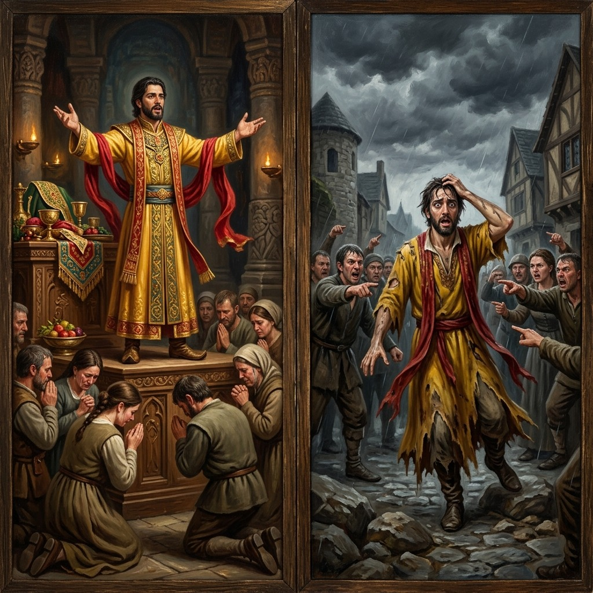
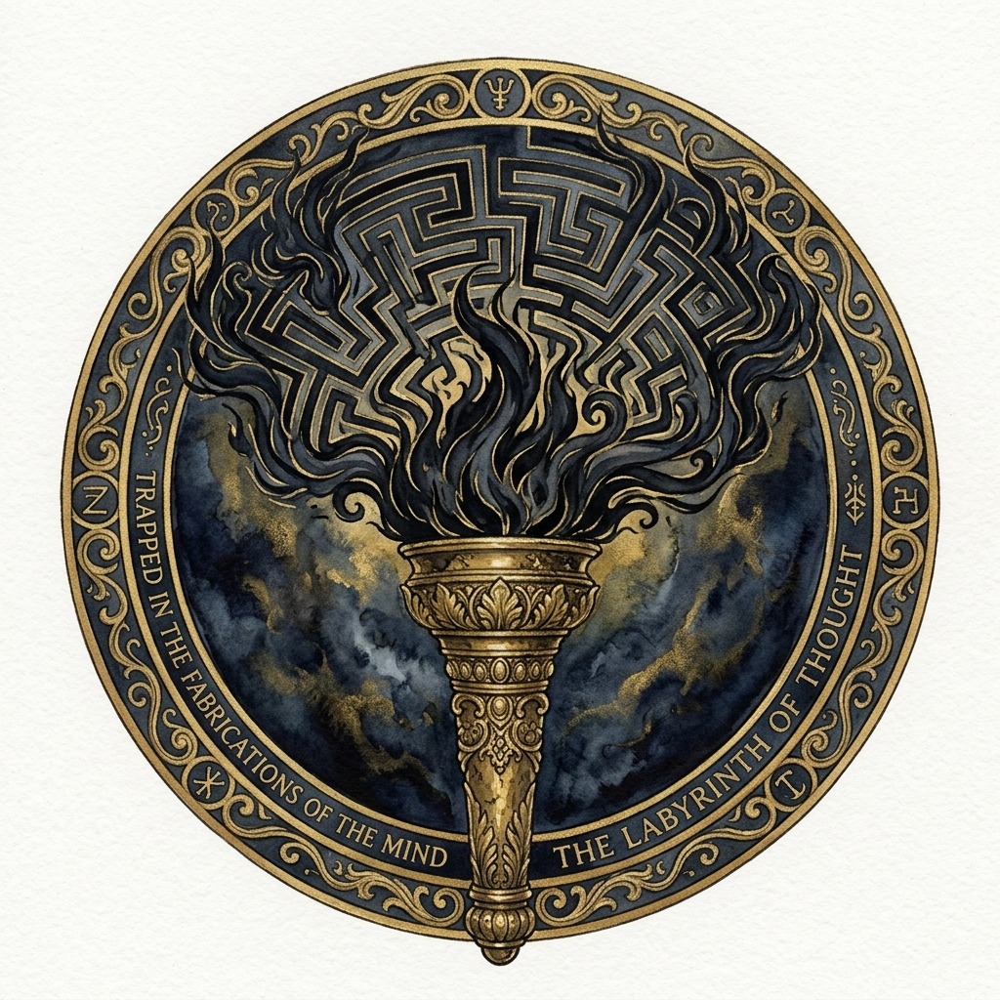
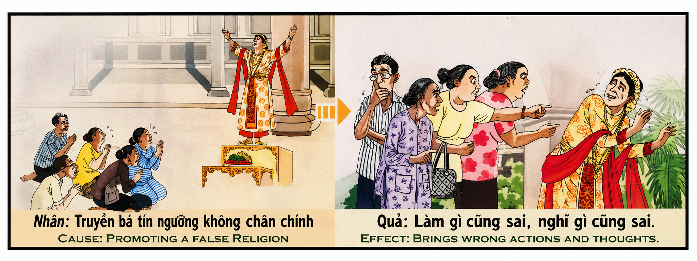

La Falsa Antorcha y el Laberinto de la Mente The False Torch and the Labyrinth of the Mind La falsa torcia e il labirinto della mente 虚假的火炬和心灵的迷宫 الشعلة الكاذبة ومتاهة العقل Ложный факел и лабиринт разума Die falsche Fackel und das Labyrinth des Geistes La fausse torche et le labyrinthe de l'esprit 偽りのトーチと心の迷宮 A falsa tocha e o labirinto da mente Ngọn Đuốc Giả Tạo Và Mê Cung Của Tâm Trí
"Utilizar lo sagrado para encadenar las mentes, comerciar con el miedo de los hombres e imponer la ceguera del dogma es construir una prisión de mentiras cuya llave perderá tu propio espíritu. El karma no te juzga por los nombres que profesas, sino por la pureza de tu amor. Quien apaga el discernimiento en otros para reinar sobre sus temores, destruye su propia brújula interior. En el laberinto de su mente nublada, cada paso será un error y cada pensamiento una distorsión, hasta que aprenda a encender la única antorcha que no engaña: el amor humilde hacia el desamparado." "To use the sacred to chain minds, to trade on the fear of men, and to impose the blindness of dogma is to build a prison of lies whose key your own spirit will lose. Karma does not judge you by the names you profess, but by the purity of your love. He who extinguishes discernment in others to reign over their fears destroys his own inner compass. In the labyrinth of his clouded mind, every step will be an error and every thought a distortion, until he learns to ignite the only torch that does not deceive: humble love for the helpless." "Utilizzare il sacro per incatenare le menti, sfruttare la paura degli uomini e imporre la cecità del dogma significa costruire una prigione di menzogne la cui chiave andrà perduta per il tuo stesso spirito. Il karma non ti giudica dai nomi che professi, ma dalla purezza del tuo amore. Colui che spegne il discernimento negli altri per regnare sulle loro paure, distrugge la propria bussola interiore. Nel labirinto della sua mente annebbiata, ogni passo sarà un errore e ogni pensiero una distorsione, finché imparerà a illuminare l'unica fiaccola che non inganna: amore umile verso gli indifesi." “用神圣来束缚心灵，利用人们的恐惧，强加教条的盲目性，就是建造一座谎言监狱，而你的灵魂将失去钥匙。业力不会通过你自称的名字来判断你，而是通过你的爱的纯洁性来判断你。如果一个人消灭了别人的洞察力来统治他们的恐惧，他就摧毁了自己内心的罗盘。在他阴云密布的头脑的迷宫中，每一步都将是一个错误，每一个想法都将是扭曲的，直到学会为止。点燃唯一不欺骗的火炬：对无助者谦卑的爱。” "إن استخدام المقدس لتقييد العقول، والمتاجرة بالخوف من البشر، وفرض عمى العقيدة، هو بناء سجن من الأكاذيب، الذي ستفقد روحك مفتاحه. الكارما لا تحكم عليك بالأسماء التي تعترف بها، بل بنقاء حبك. من يطفئ التمييز في الآخرين ليسيطر على مخاوفهم، يدمر بوصلته الداخلية. في متاهة عقله الغائم، ستكون كل خطوة خطأ وكل فكرة تشويهًا، حتى نتعلم أن نشعل الشعلة الوحيدة التي لا تخدع: الحب المتواضع تجاه الضعفاء." «Использовать священное, чтобы сковывать умы, торговать страхом людей и навязывать слепоту догм, — значит строить тюрьму лжи, ключ от которой будет потерян для вашего собственного духа. Карма судит вас не по именам, которые вы исповедуете, а по чистоте вашей любви. Тот, кто гасит проницательность в других, чтобы управлять их страхами, разрушает свой собственный внутренний компас. В лабиринте его затуманенного разума каждый шаг будет ошибкой, а каждая мысль — искажением, пока научитесь зажигать единственный не обманывающий факел: смиренную любовь к беспомощным». „Das Heilige zu nutzen, um den Geist zu fesseln, die Angst der Menschen auszunutzen und die Blindheit des Dogmas durchzusetzen, bedeutet, ein Gefängnis der Lügen zu errichten, dessen Schlüssel für den eigenen Geist verloren geht. Karma beurteilt dich nicht nach den Namen, die du bekennst, sondern nach der Reinheit deiner Liebe. Wer das Unterscheidungsvermögen anderer auslöscht, um über ihre Ängste zu herrschen, zerstört seinen eigenen inneren Kompass. Im Labyrinth seines getrübten Geistes wird jeder Schritt ein Fehler und jeder Gedanke eine Verzerrung sein, bis er lernt die einzige Fackel anzuzünden, die nicht täuscht: demütige Liebe gegenüber den Hilflosen. "Utiliser le sacré pour enchaîner les esprits, marchander sur la peur des hommes et imposer l'aveuglement du dogme, c'est construire une prison de mensonges dont la clé sera perdue pour votre propre esprit. Le karma ne vous juge pas par les noms que vous professez, mais par la pureté de votre amour. Celui qui éteint le discernement chez les autres pour régner sur leurs peurs, détruit sa propre boussole intérieure. Dans le labyrinthe de son esprit embrumé, chaque pas sera une erreur et chaque pensée une distorsion, jusqu'à apprendre à éclairer. le seul flambeau qui ne trompe pas : l'humble amour envers les impuissants." 「神聖なものを利用して心を鎖にし、人間への恐怖を取引し、教義の盲目を押し付けることは、自分自身の精神にその鍵が失われる嘘の牢獄を築くことです。カルマは、あなたが告白する名前によってではなく、あなたの愛の純度によってあなたを判断します。他人の恐怖を支配するために他人の識別力を消し去る者は、自分自身の内なる羅針盤を破壊します。曇った心の迷路では、すべての一歩が間違いであり、すべての考えになるでしょう」欺瞞のない唯一の灯火、つまり無力な人々に対する謙虚な愛を灯すことを学ぶまでは、歪みがあった。」 “Usar o sagrado para acorrentar mentes, negociar com o medo dos homens e impor a cegueira do dogma é construir uma prisão de mentiras cuja chave será perdida para o seu próprio espírito. única tocha que não engana: o amor humilde pelos desamparados”. "Dùng điều thiêng liêng để xiềng xích tâm trí, trục lợi từ nỗi sợ hãi của con người và áp đặt sự mù quáng của giáo điều là xây dựng một nhà tù dối trá mà chính linh hồn bạn sẽ đánh mất chìa khóa. Nghiệp quả không phán xét bạn bằng những danh xưng bạn tuyên xưng, mà bằng sự thuần khiết trong tình yêu của bạn. Kẻ dập tắt khả năng phân định của người khác để trị vì trên nỗi sợ hãi của họ sẽ tự hủy hoại la bàn nội tâm của chính mình. Trong mê cung của tâm trí mờ mịt, mỗi bước đi sẽ là một sai lầm và mỗi suy nghĩ sẽ là một sự bóp méo, cho đến khi họ học được cách thắp lên ngọn đuốc duy nhất không lừa dối: tình yêu khiêm nhường dành cho kẻ bất hạnh."
Diseñar y propagar activamente una creencia falsa y manipuladora —no por desacuerdo con dogmas oficiales o inquisiciones, sino con el propósito deliberado de explotar el miedo, la culpa y la vulnerabilidad de las almas— representa una de las deudas kármicas más sutiles y devastadoras para la conciencia. La fe es el puente que une al ser humano con lo divino. Cuando un charlatán o un líder autoritario deforma ese puente para convertirlo en un peaje lucrativo o en una herramienta de dominación mental, fractura el orden natural de la verdad en el universo.
La primera dimensión de esta siembra es psicológica y destructiva: el envenenamiento de la brújula interna. La mente humana funciona por resonancia de verdad. Quien de forma proactiva crea e impone sistemas de mentiras espirituales para infundir un pánico absoluto y obtener riquezas o adulación, destruye gradualmente sus propios canales de percepción. Al obligar a otros a apagar su razonamiento y su discernimiento bajo el lema del dogma ciego, el propio manipulador se vuelve incapaz de discernir entre la fantasía y la realidad. Su intelecto pierde la agudeza, y las distorsiones que inventó para engañar a los demás se convierten en las paredes invisibles de su propia celda mental.
La segunda dimensión es energética y retributiva: la pérdida absoluta de la claridad o "hacer todo mal y pensar todo mal". En la ciencia del karma, esta retribución se conoce como el bloqueo del canal de la recta acción. Al haber sembrado la niebla de la mentira espiritual en los corazones de sus seguidores, el alma del saboteador es privada kármicamente del don de la claridad. En existencias posteriores, este bloqueo se manifiesta como una demencia de acción y pensamiento. El individuo, carente de discernimiento divino, experimenta que todo lo que planea o piensa resulta en error, paranoia y confusión; sus decisiones lógicas están desestructuradas y cada acción que realiza conduce inevitablemente a la frustración, el fracaso y el rechazo público (representado en la multitud molesta que lo expone y señala).
La tercera dimensión es la redención final a través de la compasión incondicional. La salida de este laberinto mental no se logra con nuevos debates intelectuales o penitencias de dolor, sino mediante la simplicidad del corazón. Solo cuando el alma desestructurada, rota por sus propios fracasos y la pérdida de la mente, se rinde al arrepentimiento genuino y es tocada por un acto de amor incondicional y compasión desinteresada —como la sopa y la manta ofrecidas en la lluvia—, se enciende la única chispa de luz real capaz de disolver el laberinto de mentiras, guiándola de regreso a la paz del espíritu.
To actively design and propagate a false and manipulative belief—not out of disagreement with official dogmas or inquisitions, but with the deliberate purpose of exploiting the fear, guilt, and vulnerability of souls—represents one of the most subtle and devastating cosmic debts for consciousness. Faith is the bridge connecting the human being to the divine. When a charlatan or an authoritarian leader deforms that bridge to convert it into a lucrative toll or a tool of mental domination, he shatters the natural order of truth in the universe.
The first dimension of this sowing is psychological and destructive: the poisoning of the inner compass. The human mind functions by resonance of truth. He who proactively creates and imposes systems of spiritual lies to instill absolute panic and obtain wealth or adulation gradually destroys his own channels of perception. By forcing others to turn off their reasoning and discernment under the banner of blind dogma, the manipulator himself becomes incapable of discerning between fantasy and reality. His intellect loses its sharpness, and the distortions he invented to deceive others become the invisible walls of his own mental cell.
The second dimension is energetic and retributive: the absolute loss of clarity, or 'doing everything wrong and thinking everything wrong'. In the science of karma, this retribution is known as the blockage of the channel of right action. Having sown the mist of spiritual falsehood in the hearts of his followers, the soul of the saboteur is cosmically deprived of the gift of clarity. In subsequent lives, this blockage manifests as a dementia of action and thought. The individual, lacking divine discernment, experiences that everything he plans or thinks results in error, paranoia, and confusion; his logical decisions are unstructured, and every action he performs leads inevitably to frustration, failure, and public rejection (represented by the angry crowd pointing and exposing him).
The third dimension is the final redemption through unconditional compassion. The way out of this mental labyrinth is not achieved through new intellectual debates or penances of pain, but through simplicity of heart. Only when the unstructured soul, broken by its own failures and the loss of the mind, surrenders to genuine repentance and is touched by an act of unconditional love and selfless compassion—like the soup and blanket offered in the rain—is the single spark of real light ignited, capable of dissolving the labyrinth of lies and guiding it back to the peace of the spirit.
Dprogettare e diffondere attivamente una credenza falsa e manipolativa, non per disaccordo con i dogmi ufficiali o le inquisizioni, ma con lo scopo deliberato di sfruttare la paura, il senso di colpa e la vulnerabilità delle anime, rappresenta uno dei debiti karmici più subdoli e devastanti verso la coscienza. La fede è il ponte che unisce l'essere umano al divino. Quando un ciarlatano o un leader autoritario deforma quel ponte in un lucroso pedaggio o in uno strumento di dominio mentale, frattura l’ordine naturale della verità nell’universo.
La prima dimensione di questa semina è psicologica e distruttiva: l’avvelenamento della bussola interna. La mente umana funziona per risonanza della verità. Colui che crea e impone in modo proattivo sistemi di menzogne spirituali per instillare il panico assoluto e ottenere ricchezza o adulazione distrugge gradualmente i propri canali di percezione. Costringendo gli altri a chiudere il loro ragionamento e discernimento sotto la bandiera del dogma cieco, il manipolatore stesso diventa incapace di discernere tra fantasia e realtà. Il suo intelletto perde la sua acutezza e le distorsioni che ha inventato per ingannare gli altri diventano le pareti invisibili della sua stessa cellula mentale.
La seconda dimensione è energetica e retributiva: la perdita assoluta di chiarezza o "fare tutto in modo sbagliato e pensare tutto in modo sbagliato". Nella scienza del karma, questa retribuzione è nota come blocco del canale della giusta azione. Avendo seminato la nebbia della menzogna spirituale nei cuori dei suoi seguaci, l'anima del sabotatore è karmicamente privata del dono della chiarezza. Nelle esistenze successive, questo blocco si manifesta come una follia di azione e di pensiero. L'individuo, privo del discernimento divino, sperimenta che tutto ciò che progetta o pensa si traduce in errore, paranoia e confusione; his logical decisions are unstructured and every action he takes inevitably leads to frustration, failure and public rejection (represented in the angry crowd that exposes and points him out).
La terza dimensione è la redenzione finale attraverso la compassione incondizionata. L'uscita da questo labirinto mentale non si ottiene con nuovi dibattiti intellettuali o penitenze di dolore, ma attraverso la semplicità del cuore. Solo quando l’anima non strutturata, spezzata dai propri fallimenti e dalla perdita della mente, si arrende al pentimento genuino ed è toccata da un atto di amore incondizionato e compassione disinteressata – come la zuppa e la coperta offerte sotto la pioggia – l’unica scintilla di vera luce è in grado di dissolvere il labirinto di bugie, riconducendola alla pace dello spirito.
D积极设计和传播虚假和操纵性的信仰——不是出于与官方教条或调查的分歧，而是故意利用灵魂的恐惧、内疚和脆弱——代表了对良心最微妙和最具破坏性的业债之一。信仰是连接人与神的桥梁。当江湖骗子或独裁领导人将这座桥梁变形为利润丰厚的通行费或精神统治的工具时，他就破坏了宇宙中真理的自然秩序。
这种播种的第一个维度是心理上的和破坏性的：内部罗盘的中毒。人类的思维是通过真理的共鸣来运作的。那些主动创造和强加精神谎言体系以灌输绝对恐慌并获得财富或奉承的人会逐渐破坏自己的感知渠道。通过在盲目教条的旗帜下强迫其他人关闭他们的推理和辨别力，操纵者自己变得无法辨别幻想和现实。他的智力失去了敏锐性，他为了欺骗他人而发明的扭曲变成了他自己精神细胞的无形之墙。
第二个维度是充满活力和报应性的：完全失去清晰度或“做错一切、想错一切”。在业力科学中，这种报应被称为阻塞正确行动的通道。破坏者的灵魂在其追随者的心中散布了精神谎言的迷雾，因此被业力剥夺了清晰的天赋。在后来的存在中，这种阻碍表现为行动和思想的疯狂。缺乏神圣洞察力的个人会体验到他计划或思考的一切都会导致错误、偏执和混乱；他的逻辑决策是非结构化的，他采取的每一个行动都不可避免地导致挫折、失败和公众拒绝（以揭露和指出他的愤怒人群为代表）。
第三个维度是通过无条件慈悲的最终救赎。走出这个精神迷宫并不是通过新的智力辩论或痛苦的忏悔来实现的，而是通过心灵的简单来实现。只有当无组织的灵魂因自身的失败和丧失而破碎，屈服于真正的悔改，并被无条件的爱和无私的同情心所触动时——就像雨中提供的汤和毯子一样——才是真正能够溶解谎言迷宫的唯一火花，引导它回到精神的平静。
ديمثل التصميم النشط لاعتقاد كاذب ومتلاعب ونشره - ليس بسبب الاختلاف مع العقائد الرسمية أو محاكم التفتيش، ولكن بهدف متعمد يتمثل في استغلال الخوف والشعور بالذنب وضعف النفوس - أحد أكثر ديون الكارما خفية وتدميرًا للضمير. الإيمان هو الجسر الذي يوحد الإنسان مع الإلهي. عندما يقوم الدجال أو الزعيم الاستبدادي بتشويه هذا الجسر وتحويله إلى أداة مربحة للسيطرة العقلية، فإنه يكسر النظام الطبيعي للحقيقة في الكون.
البعد الأول لهذا البذر هو البعد النفسي والمدمر: تسميم البوصلة الداخلية. العقل البشري يعمل بصدى الحقيقة. إن من يبتكر ويفرض بشكل استباقي أنظمة الأكاذيب الروحية لبث الذعر المطلق والحصول على الثروة أو التملق يدمر تدريجياً قنوات إدراكه. من خلال إجبار الآخرين على إيقاف تفكيرهم وتمييزهم تحت راية العقيدة العمياء، يصبح المتلاعب نفسه غير قادر على التمييز بين الخيال والواقع. يفقد عقله حدته، وتصبح التشوهات التي اخترعها لخداع الآخرين هي الجدران غير المرئية لخليته العقلية.
البعد الثاني هو النشاط والانتقام: الفقدان المطلق للوضوح أو "القيام بكل شيء بشكل خاطئ والتفكير في كل شيء بشكل خاطئ". في علم الكارما، يُعرف هذا الانتقام بإغلاق قناة العمل الصحيح. بعد أن زرع ضباب الكذب الروحي في قلوب أتباعه، حُرمت روح المخرب بطريقة كارمية من موهبة الوضوح. في الوجود اللاحق، يتجلى هذا الانسداد على أنه جنون الفعل والفكر. يختبر الفرد الذي يفتقر إلى التمييز الإلهي أن كل ما يخطط له أو يفكر فيه يؤدي إلى الخطأ والارتياب والارتباك؛ قراراته المنطقية غير منظمة وكل إجراء يقوم به يؤدي حتماً إلى الإحباط والفشل والرفض الشعبي (ممثلاً في الجمهور الغاضب الذي يفضحه ويشير إليه).
البعد الثالث هو الخلاص النهائي من خلال التعاطف غير المشروط. إن الخروج من هذه المتاهة العقلية لا يتم عبر نقاشات فكرية جديدة أو تكفيرات الألم، بل عبر بساطة القلب. فقط عندما تستسلم الروح غير المنظمة، المنكسرة بسبب إخفاقاتها وفقدانها للعقل، للتوبة الحقيقية وتتلامس مع فعل من الحب غير المشروط والرحمة غير الأنانية - مثل الحساء والبطانية المقدمة في المطر - هي الشرارة الوحيدة للضوء الحقيقي القادر على حل متاهة الأكاذيب، وتوجيهها مرة أخرى إلى سلام الروح.
Dактивное создание и распространение ложных и манипулятивных убеждений – не из-за несогласия с официальными догмами или инквизицией, а с намеренной целью эксплуатации страха, вины и уязвимости душ – представляет собой один из самых тонких и разрушительных кармических долгов перед совестью. Вера – это мост, соединяющий человека с божественным. Когда шарлатан или авторитарный лидер превращает этот мост в прибыльный инструмент ментального господства, он разрушает естественный порядок истины во вселенной.
Первое измерение этого посева – психологическое и деструктивное: отравление внутреннего компаса. Человеческий разум работает посредством резонанса истины. Тот, кто активно создает и навязывает системы духовной лжи, чтобы посеять абсолютную панику и получить богатство или лесть, постепенно разрушает свои собственные каналы восприятия. Заставляя других отключать свои рассуждения и проницательность под знаменем слепой догмы, манипулятор сам становится неспособным различать фантазию и реальность. Его интеллект теряет остроту, а искажения, которые он придумал для обмана других, становятся невидимыми стенками его собственной психической камеры.
Второе измерение — энергичное и карательное: абсолютная потеря ясности или «все делаешь неправильно и думаешь все неправильно». В науке о карме такое возмездие известно как блокирование канала правильного действия. Посеяв туман духовной лжи в сердцах своих последователей, душа диверсанта кармически лишается дара ясности. В более поздних существованиях эта блокировка проявляется как безумие действий и мыслей. Человек, лишенный божественной проницательности, переживает, что все, что он планирует или думает, приводит к ошибкам, паранойе и замешательству; его логические решения неструктурированы, и каждое его действие неизбежно приводит к разочарованию, неудаче и общественному неприятию (что представлено в разгневанной толпе, которая разоблачает и указывает на него).
Третье измерение — это окончательное искупление через безусловное сострадание. Выход из этого умственного лабиринта достигается не новыми интеллектуальными спорами или покаянием в боли, а простотой сердца. Только тогда, когда бесформенная душа, сломленная собственными неудачами и помешательством, предается подлинному покаянию и тронута актом безусловной любви и бескорыстного сострадания – как суп и одеяло, предложенное под дождем, – единственная искра настоящего света способна растворить лабиринт лжи, направив ее обратно к душевному спокойствию.
Ddas aktive Entwerfen und Verbreiten eines falschen und manipulativen Glaubens – nicht aus Uneinigkeit mit offiziellen Dogmen oder Inquisitionen, sondern mit der bewussten Absicht, die Angst, Schuld und Verletzlichkeit der Seelen auszunutzen – stellt eine der subtilsten und verheerendsten karmischen Schulden gegenüber dem Gewissen dar. Der Glaube ist die Brücke, die den Menschen mit dem Göttlichen verbindet. Wenn ein Scharlatan oder autoritärer Anführer diese Brücke in einen lukrativen Lohn oder ein Werkzeug der geistigen Herrschaft verformt, bricht er die natürliche Ordnung der Wahrheit im Universum.
Die erste Dimension dieser Aussaat ist psychologisch und destruktiv: die Vergiftung des inneren Kompasses. Der menschliche Geist arbeitet durch die Resonanz der Wahrheit. Wer proaktiv Systeme spiritueller Lügen erschafft und durchsetzt, um absolute Panik zu schüren und Reichtum oder Bewunderung zu erlangen, zerstört nach und nach seine eigenen Wahrnehmungskanäle. Indem der Manipulator andere dazu zwingt, sein Denken und Urteilsvermögen unter dem Banner blinder Dogmen aufzugeben, wird er selbst unfähig, zwischen Fantasie und Realität zu unterscheiden. Sein Intellekt verliert seine Schärfe und die Verzerrungen, die er erfunden hat, um andere zu täuschen, werden zu unsichtbaren Wänden seiner eigenen Geisteszelle.
Die zweite Dimension ist energetisch und vergeltend: der absolute Verlust der Klarheit oder „alles falsch machen und alles falsch denken“. In der Wissenschaft des Karma wird diese Vergeltung als Blockierung des Kanals des richtigen Handelns bezeichnet. Nachdem er den Nebel der spirituellen Lüge in die Herzen seiner Anhänger gesät hat, wird die Seele des Saboteurs karmisch der Gabe der Klarheit beraubt. In späteren Existenzen manifestiert sich diese Blockade als Handlungs- und Gedankenwahnsinn. Das Individuum, dem es an göttlichem Urteilsvermögen mangelt, macht die Erfahrung, dass alles, was er plant oder denkt, zu Fehlern, Paranoia und Verwirrung führt; Seine logischen Entscheidungen sind unstrukturiert und jede seiner Handlungen führt unweigerlich zu Frustration, Misserfolg und öffentlicher Ablehnung (dargestellt in der wütenden Menge, die ihn bloßstellt und auf ihn aufmerksam macht).
Die dritte Dimension ist die endgültige Erlösung durch bedingungsloses Mitgefühl. Der Ausweg aus diesem mentalen Labyrinth gelingt nicht durch neue intellektuelle Debatten oder schmerzliche Buße, sondern durch die Einfachheit des Herzens. Erst wenn die unstrukturierte Seele, gebrochen durch ihr eigenes Versagen und ihren Geistesverlust, sich der echten Reue hingibt und von einem Akt bedingungsloser Liebe und selbstlosen Mitgefühls berührt wird – wie die Suppe und die Decke, die im Regen angeboten werden –, ist der einzige Funke echten Lichts in der Lage, das Labyrinth der Lügen aufzulösen und sie zurück zum Frieden des Geistes zu führen.
Dconcevoir et propager activement une croyance fausse et manipulatrice - non par désaccord avec les dogmes ou les inquisitions officiels, mais dans le but délibéré d'exploiter la peur, la culpabilité et la vulnérabilité des âmes - représente l'une des dettes karmiques les plus subtiles et les plus dévastatrices envers la conscience. La foi est le pont qui unit l'être humain au divin. Lorsqu’un charlatan ou un leader autoritaire transforme ce pont en un péage lucratif ou un outil de domination mentale, il brise l’ordre naturel de la vérité dans l’univers.
La première dimension de cet ensemencement est psychologique et destructrice : l’empoisonnement de la boussole interne. L'esprit humain fonctionne par résonance de la vérité. Celui qui crée et impose de manière proactive des systèmes de mensonges spirituels pour semer la panique absolue et obtenir la richesse ou l’adulation détruit progressivement ses propres canaux de perception. En forçant les autres à abandonner leur raisonnement et leur discernement sous la bannière d’un dogme aveugle, le manipulateur lui-même devient incapable de discerner entre fantasme et réalité. Son intellect perd de son acuité et les distorsions qu'il a inventées pour tromper les autres deviennent les murs invisibles de sa propre cellule mentale.
La deuxième dimension est énergétique et rétributive : la perte absolue de clarté ou "faire tout de mal et penser que tout est faux". Dans la science du karma, cette rétribution est connue pour bloquer le canal de l'action juste. Après avoir semé le brouillard du mensonge spirituel dans le cœur de ses disciples, l'âme du saboteur est karmiquement privée du don de clarté. Dans les existences ultérieures, ce blocage se manifeste par une folie d’action et de pensée. L'individu, dépourvu de discernement divin, fait l'expérience que tout ce qu'il planifie ou pense aboutit à l'erreur, à la paranoïa et à la confusion ; ses décisions logiques ne sont pas structurées et chaque action qu'il entreprend conduit inévitablement à la frustration, à l'échec et au rejet du public (représenté par la foule en colère qui l'expose et le désigne).
La troisième dimension est la rédemption finale par la compassion inconditionnelle. La sortie de ce labyrinthe mental ne se fait pas par de nouveaux débats intellectuels ou par des pénitences de douleur, mais par la simplicité du cœur. Ce n’est que lorsque l’âme non structurée, brisée par ses propres échecs et sa perte d’esprit, s’abandonne à une véritable repentance et est touchée par un acte d’amour inconditionnel et de compassion désintéressée – comme la soupe et la couverture offertes sous la pluie – que la seule étincelle de vraie lumière est capable de dissoudre le labyrinthe des mensonges et de la guider vers la paix de l’esprit.
D公式の教義や異端審問に同意しないからではなく、魂の恐怖、罪悪感、脆弱さを利用するという意図的な目的で、誤った操作的な信念を積極的に設計し広めることは、良心に対する最も微妙で壊滅的なカルマ的負債の 1 つを表します。信仰は人間と神を結びつける橋です。ペテン師や権威主義的な指導者がその橋を変形させて、儲かる代償や精神的支配の道具にすると、宇宙の自然な真理の秩序が崩壊します。
この種まきの最初の側面は心理的かつ破壊的なものであり、内部コンパスの中毒です。人間の心は真実の共鳴によって機能します。絶対的なパニックを植え付け、富や賞賛を得るために、精神的な嘘のシステムを積極的に作り出し、押し付ける者は、徐々に自分自身の知覚経路を破壊します。盲目的な教義の旗のもとに他者に推論と識別力を強制的に封じることによって、操作者自身も空想と現実の区別ができなくなる。彼の知性は鋭さを失い、他者を欺くために発明した歪みが彼自身の精神細胞の見えない壁となる。
2 番目の次元はエネルギー的で報復的です。明晰さの絶対的な喪失、または「すべてが間違ったことをし、すべてが間違っていると考える」 ことです。カルマの科学では、この報復は正しい行動の経路を遮断するものとして知られています。信奉者の心に霊的な嘘の霧を蒔いたため、妨害者の魂はカルマによって明晰さの賜物を奪われている。後の世では、この妨害は行動と思考の狂気として現れます。神聖な識別力に欠けている人は、自分が計画したり考えたりするすべてが間違い、被害妄想、混乱につながることを経験します。彼の論理的な決定は構造化されておらず、彼がとるすべての行動は必然的にフラストレーション、失敗、そして世間の拒絶につながります（彼を暴露し指摘する怒っている群衆に代表されます）。
第三の次元は無条件の慈悲による最終的な救いです。この精神的な迷宮からの脱出は、新たな知的な議論や苦痛の苦行によってではなく、心の単純さによって達成されます。自らの失敗や精神の喪失によって打ち砕かれた未構造の魂が、真の悔い改めに身を委ね、無条件の愛と無私無私の慈悲の行為――雨の中で供えられるスープや毛布のように――に触れられたときのみ、偽りの迷宮を溶かし、精神の平安へと導くことができる唯一の真の光の輝きとなる。
Dprojetar e propagar ativamente uma crença falsa e manipuladora – não por desacordo com dogmas oficiais ou inquisições, mas com o propósito deliberado de explorar o medo, a culpa e a vulnerabilidade das almas – representa uma das dívidas cármicas mais sutis e devastadoras para com a consciência. A fé é a ponte que une o ser humano ao divino. Quando um charlatão ou líder autoritário deforma essa ponte numa ferramenta lucrativa ou numa ferramenta de dominação mental, ele fratura a ordem natural da verdade no universo.
A primeira dimensão desta semeadura é psicológica e destrutiva: o envenenamento da bússola interna. A mente humana funciona por ressonância da verdade. Aquele que cria e impõe proativamente sistemas de mentiras espirituais para instilar pânico absoluto e obter riqueza ou adulação destrói gradualmente os seus próprios canais de percepção. Ao forçar os outros a encerrar o seu raciocínio e discernimento sob a bandeira do dogma cego, o próprio manipulador torna-se incapaz de discernir entre a fantasia e a realidade. Seu intelecto perde a agudeza e as distorções que ele inventou para enganar os outros tornam-se as paredes invisíveis de sua própria célula mental.
A segunda dimensão é energética e retributiva: a perda absoluta de clareza ou “fazer tudo errado e pensar tudo errado”. Na ciência do carma, essa retribuição é conhecida como bloquear o canal da ação correta. Tendo semeado a névoa da mentira espiritual nos corações de seus seguidores, a alma do sabotador é carmicamente privada do dom da clareza. Nas existências posteriores, esse bloqueio se manifesta como uma insanidade de ação e de pensamento. O indivíduo, carente de discernimento divino, experimenta que tudo o que planeja ou pensa resulta em erro, paranóia e confusão; suas decisões lógicas não são estruturadas e cada ação que ele realiza leva inevitavelmente à frustração, ao fracasso e à rejeição pública (representada na multidão enfurecida que o expõe e aponta).
A terceira dimensão é a redenção final através da compaixão incondicional. A saída deste labirinto mental não se consegue com novos debates intelectuais ou penitências de dor, mas através da simplicidade do coração. Somente quando a alma desestruturada, quebrada por seus próprios fracassos e perda de consciência, se rende ao arrependimento genuíno e é tocada por um ato de amor incondicional e compaixão altruísta – como a sopa e o cobertor oferecidos na chuva – é a única centelha de luz real capaz de dissolver o labirinto de mentiras, guiando-a de volta à paz de espírito.
Chủ động thiết kế và lan truyền một niềm tin giả tạo và thao túng —không phải vì bất đồng với các giáo điều chính thống hay các tòa án dị giáo, mà với mục đích cố ý lợi dụng nỗi sợ hãi, tội lỗi và sự tổn thương của các linh hồn— đại diện cho một trong những món nợ nghiệp quả tinh tế và tàn phá nhất đối với tâm thức. Niềm tin là chiếc cầu nối con người với thế giới tâm linh thiêng liêng. Khi một kẻ lừa bịp hoặc một nhà lãnh đạo độc tài làm biến dạng chiếc cầu đó để biến nó thành một trạm thu phí béo bở hoặc một công cụ thống trị tinh thần, y đang phá vỡ trật tự tự nhiên của chân lý trong vũ trụ.
Chiều kích thứ nhất của sự gieo trồng này là tâm lý và sự tàn phá: sự đầu độc la bàn nội tâm. Tâm trí con người hoạt động bằng sự cộng hưởng của chân lý. Kẻ chủ động tạo ra và áp đặt các hệ thống dối trá tâm linh để gieo rắc sự hoảng loạn tuyệt đối nhằm đạt được sự giàu có hoặc tôn thờ sẽ dần dần hủy hoại các kênh nhận thức của chính mình. Bằng cách buộc người khác phải tắt tư duy và sự phân định của họ dưới ngọn cờ giáo điều mù quáng, kẻ thao túng tự trở nên mất khả năng phân biệt giữa ảo tưởng và hiện thực. Trí tuệ của y mất đi sự sắc bén, và những điều bóp méo do y phát minh để lừa dối người khác sẽ trở thành những bức tường vô hình của chính ngục tù tâm trí mình.
Chiều kích thứ hai là năng lượng và sự trừng phạt: sự mất đi hoàn toàn của sự sáng suốt, hay "làm gì cũng sai và nghĩ gì cũng sai". Trong khoa học nghiệp quả, sự trừng phạt này được gọi là sự tắc nghẽn của kênh hành động chân chính. Khi đã gieo rắc làn sương mù của dối trá tâm linh vào trái tim của những người theo dõi, linh hồn của kẻ phá hoại bị tước đoạt một cách tự nhiên món quà của sự sáng suốt. Trong các kiếp sống tiếp theo, sự tắc nghẽn này biểu hiện dưới dạng một sự mất trí về hành động và suy nghĩ. Cá nhân mất đi sự phân định thần thánh, trải qua việc mọi thứ y lên kế hoạch hoặc suy nghĩ đều dẫn đến sai lầm, hoang tưởng và hỗn loạn; các quyết định logic của y bị mất cấu trúc, và mỗi hành động y thực hiện chắc chắn dẫn đến sự thất vọng, thất bại và sự ruồng bỏ của công chúng (được khắc họa qua đám đông tức giận chỉ tay và phơi bày y).
Chiều kích thứ ba là sự cứu rỗi cuối cùng thông qua lòng từ bi vô điều kiện. Lối thoát khỏi mê cung tâm trí này không đạt được qua các cuộc tranh luận trí thức mới hay những hình phạt đau đớn, mà qua sự khiêm nhường của trái tim. Chỉ khi linh hồn bị mất cấu trúc, bị tan vỡ bởi chính những thất bại và sự mất trí của mình, đầu hàng trước sự sám hối chân thành và được chạm đến bởi một hành động yêu thương vô điều kiện và lòng từ bi vị tha —như chiếc bát súp và tấm chăn được trao trong cơn mưa—, ngọn lửa của ánh sáng thực sự duy nhất mới được thắp sáng, có khả năng hòa tan mê cung dối trá và dẫn dắt nó trở lại với hòa bình của linh hồn.
El Templo del Oro y el Río de la Verdad
The Temple of Gold and the River of Truth
Il Tempio d'Oro e il Fiume della Verità
黄金神殿与真理之河
معبد الذهب ونهر الحقيقة
Храм Золота и Река Истины
Der Tempel des Goldes und der Fluss der Wahrheit
Le Temple d'Or et la Rivière de Vérité
黄金の神殿と真実の川
O Templo do Ouro e o Rio da Verdade
Đền Thờ Bằng Vàng Và Dòng Sông Chân Lý
En las ricas colinas de Veridia, donde los valles eran verdes pero los corazones a menudo estaban secos por el apego a lo mundano, vivía Marek, un orador de una elocuencia hipnótica y una astucia sin límites. Marek poseía el don de la palabra, pero su alma carecía de amor por la verdad. Observando que los hombres vivían atormentados por el miedo a la enfermedad, al porvenir y a lo desconocido, concibió un plan para enriquecerse: fundó la 'Orden del Altar Dorado'. Marek se vistió con lujosos ropajes dorados y estolas rojas, erigió un altar y exclamó de forma teatral: «¡La Luz Divina solo escuchará vuestras plegarias si colocáis vuestras ofrendas más preciosas sobre mi altar! Aquellos que duden de mis rituales serán condenados al fuego del olvido eterno». Aterrorizados por sus palabras, los campesinos de la comarca se arrodillaban ante él llorando, entregándole sus escasos ahorros, sus joyas y su paz mental, mientras Marek reía en secreto en su palacio privado.
Un otoño, llegó a la región Eli, un caminante de ojos mansos y túnica remendada que no poseía más bienes que su amor por la creación. Eli se instaló junto al río, sanando a los enfermos con hierbas y consolando a los afligidos con palabras que hablaban desde el corazón. Eli enseñaba: «El Creador no habita en altares de oro ni exige monedas para perdonar. Su gracia es libre e incondicional como el sol y la lluvia. Cuestionadlo todo, no entreguéis vuestro discernimiento a ningún hombre; buscad el templo de la verdad dentro de vuestro propio corazón». Al escuchar esto, Marek temió perder su riqueza y su poder absoluto. Utilizando su elocuencia, acusó a Eli ante los sacerdotes de la inquisición de Veridia, alegando que Eli promovía una religión falsa y blasfema. Eli fue apresado y desterrado bajo el silencio compasivo de su espíritu, pero antes de partir le advió a Marek: «Marek, has construido un laberinto de mentiras para reinar sobre los temores de los hombres, pero has destruido tu propia brújula. Al convencer a otros de que la oscuridad es la luz divina, perderás tus propios ojos para ver».
El tiempo pasó y una terrible sequía azotó a Veridia. Los campos se secaron y la miseria cundió entre los campesinos. A pesar de los elaborados rituales de Marek y sus exigencias de más ofrendas de oro, la lluvia no llegó. Los aldeanos, desesperados y con los ojos abiertos por el dolor, comprendieron al fin la vacuidad de sus promesas y la codicia que se ocultaba tras su estola. Enfurecidos, se reunieron ante las puertas de su templo, señalándolo con el dedo con gritos de acusación y exponiendo públicamente sus engaños. Marek intentó huir, despojado de sus vestiduras y de su gloria, bajo una lluvia tormentosa que lavó el oro falso de su fachada.
Sin embargo, el verdadero juicio kármico fue interno y absoluto. Marek descubrió horrorizado que sus propios canales mentales estaban completamente desestructurados. Al haber pasado décadas autoconvenciéndose y enseñando que la mentira era verdad, había destruido su capacidad de razonar. Su mente se convirtió en un laberinto de paranoia constante. Cuando intentaba sembrar trigo, plantaba piedras en invierno; cuando intentaba edificar una cabaña, levantaba las paredes sobre lodo y arena; cuando intentaba hablar, solo brotaban de su boca palabras confusas y sin sentido. Todo lo que planeaba era un error, y todo lo que pensó era una distorsión. Marek vagó durante años en absoluta demencia, convertido en un vagabundo perdido en el laberinto de su propia mente, mientras la gente lo señalaba en las calles como al orador loco que había perdido el juicio.
Una tarde de invierno y lluvia helada, Marek yacía tiritando en el barro de un callejón oscuro, esperando la muerte. Ruth, una joven que de niña había sido curada y consolada por las palabras compasivas de Eli, pasó por el lugar. Al reconocer al antiguo y deshonrado sacerdote bajo la lluvia, Ruth no sintió ira ni deseo de venganza. Con un amor incondicional puro, lo cubrió con una manta de lana gruesa y le ofreció un cuenco de sopa caliente. Marek, sintiendo el calor del alimento y de la compasión, rompió a llorar con lágrimas de profunda redención que lavaron el barro de su rostro. Marek susurró con voz quebrada: «¿Por qué me salvas, Ruth, si yo fui quien instigó la expulsión de Eli y os engañó con un templo falso? Mi mente está atrapada para siempre en la oscuridad del laberinto que yo mismo construí». Ruth le miró con compasión infinita y le respondió suavemente: «Eli nos enseñó que la única ley verdadera del espíritu es la compasión desinteresada y el amor puro. Tu falso templo de oro se ha desmoronado, Marek, pero la salida de tu laberinto no requiere monedas ni dogmas, sino un solo acto de verdad y humildad en tu corazón». Al escuchar esto, el laberinto de Marek se disolvió en un destello de luz pura, experimentando por primera vez una claridad celestial que devolvió el reposo a su espíritu cansado.
In the wealthy hills of Veridia, where the valleys were green but hearts were often dry from attachment to worldly things, lived Marek, an orator of hypnotic eloquence and boundless cunning. Marek possessed the gift of the word, but his soul lacked love for truth. Observing that men lived tormented by the fear of disease, the future, and the unknown, he conceived a plan to enrich himself: he founded the 'Order of the Golden Altar'. Marek dressed in luxurious golden robes and red stoles, erected an altar, and theatrically exclaimed: 'The Divine Light will only hear your prayers if you place your most precious offerings on my altar! Those who doubt my rituals will be condemned to the fire of eternal oblivion.' Terrified by his words, the peasants of the region knelt before him weeping, surrendering their meager savings, their jewels, and their peace of mind, while Marek secretly laughed in his private palace.
One autumn, Eli, a traveler with gentle eyes and a patched robe who possessed no other goods than his love for creation, arrived in the region. Eli settled by the river, healing the sick with herbs and comforting the afflicted with words that spoke from the heart. Eli taught: 'The Creator does not dwell in gold altars nor demand coins to forgive. His grace is free and unconditional like the sun and the rain. Question everything, do not hand over your discernment to any man; seek the temple of truth within your own heart.' Hearing this, Marek feared losing his wealth and absolute power. Using his eloquence, he accused Eli before the priests of the Inquisition of Veridia, claiming that Eli promoted a false and blasphemous religion. Eli was imprisoned and banished under the compassionate silence of his spirit, but before departing he warned Marek: 'Marek, you have built a labyrinth of lies to reign over the fears of men, but you have destroyed your own compass. By convincing others that darkness is divine light, you will lose your own eyes to see.'
Time passed, and a terrible drought struck Veridia. The fields dried up and misery spread among the peasants. Despite Marek's elaborate rituals and demands for more gold offerings, the rain did not come. The villagers, desperate and with their eyes opened by pain, finally understood the emptiness of his promises and the greed hidden behind his stole. Enraged, they gathered before the doors of his temple, pointing their fingers at him with shouts of accusation and publicly exposing his deceptions. Marek tried to flee, stripped of his garments and his glory, under a stormy rain that washed away the false gold of his facade.
However, the true karmic judgment was internal and absolute. Marek discovered to his horror that his own mental channels were completely unstructured. Having spent decades self-convincing and teaching that lies were truth, he had destroyed his ability to reason. His mind became a labyrinth of constant paranoia. When he tried to sow wheat, he planted stones in winter; when he tried to build a cottage, he raised the walls on mud and sand; when he tried to speak, only confused and meaningless words poured from his mouth. Everything he planned was an error, and everything he thought was a distortion. Marek wandered for years in absolute dementia, converted into a vagabond lost in the labyrinth of his own mind, while people pointed at him in the streets as the mad orator who had lost his judgment.
One winter afternoon of freezing rain, Marek lay shivering in the mud of a dark alley, waiting for death. Ruth, a young woman who as a child had been healed and comforted by Eli's compassionate words, passed by. Recognizing the former and disgraced priest in the rain, Ruth felt no anger or desire for revenge. With pure, unconditional love, she covered him with a thick wool blanket and offered him a bowl of hot soup. Marek, feeling the warmth of the food and compassion, broke down in tears of deep redemption that washed the mud from his face. Marek whispered with a broken voice: 'Why do you save me, Ruth, if I was the one who instigated the expulsion of Eli and deceived you with a false temple? My mind is trapped forever in the darkness of the labyrinth I built myself.' Ruth looked at him with infinite compassion and answered gently: 'Eli taught us that the only true law of the spirit is selfless compassion and pure love. Your false temple of gold has crumbled, Marek, but the exit from your labyrinth requires no coins or dogmas, but a single act of truth and humility in your heart.' Hearing this, Marek's labyrinth dissolved in a flash of pure light, experiencing for the first time a celestial clarity that returned rest to his tired spirit.
Nelle ricche colline di Veridia, dove le valli erano verdi ma i cuori erano spesso aridi di attaccamento al mondano, viveva Marek, un oratore di eloquenza ipnotica e astuzia sconfinata. Marek aveva il dono della parola, ma nella sua anima mancava l'amore per la verità. Osservando che gli uomini vivevano tormentati dalla paura della malattia, del futuro e dell'ignoto, concepì un piano per arricchirsi: fondò l''Ordine dell'Altare d'Oro'. Marek vestito con lussuose vesti dorate e stole rosse, eresse un altare ed esclamò teatralmente: "La Luce Divina ascolterà le tue preghiere solo se metterai le tue offerte più preziose sul mio altare! Coloro che dubitano dei miei rituali saranno condannati al fuoco dell'oblio eterno. Terrorizzati dalle sue parole, i contadini della regione si inginocchiarono davanti a lui piangendo, donandogli i loro magri risparmi, i loro gioielli e la loro tranquillità, mentre Marek rideva di nascosto nel suo palazzo privato.
Un autunno arrivò nella regione Eli, un viandante dagli occhi gentili e dalla tunica rattoppata che non aveva altra risorsa se non l'amore per il creato. Eli si stabilì vicino al fiume, guarendo i malati con le erbe e confortando gli afflitti con parole che parlavano dal cuore. Eli insegnò: "Il Creatore non dimora su altari d'oro né ha bisogno di monete per perdonare. La sua grazia è gratuita e incondizionata come il sole e la pioggia. Metti in discussione tutto, non dare il tuo discernimento a nessuno; cerca il tempio della verità nel tuo cuore. Sentendo questo, Marek temette di perdere la sua ricchezza e il suo potere assoluto. Usando la sua eloquenza, accusò Eli davanti ai sacerdoti dell'inquisizione veridiana, sostenendo che Eli promuoveva una religione falsa e blasfema. Eli era catturato e bandito sotto il silenzio compassionevole del suo spirito, ma prima di partire avvertì Marek: “Marek, hai costruito un labirinto di bugie per regnare sulle paure degli uomini, ma hai distrutto la tua stessa bussola. Convincendo gli altri che l'oscurità è luce divina, perderai i tuoi occhi per vedere.
Il tempo passò e una terribile siccità colpì Veridia. I campi si seccarono e la miseria si diffuse tra i contadini. Nonostante gli elaborati rituali di Marek e le sue richieste di ulteriori offerte d'oro, la pioggia non arrivò. Gli abitanti del villaggio, disperati e con gli occhi spalancati dal dolore, capirono finalmente la vanità delle sue promesse e l'avidità che si nascondeva dietro la sua stola. Infuriati, si radunarono davanti alle porte del suo tempio, puntando il dito contro di lui con grida di accusa e denunciando pubblicamente i suoi inganni. Marek tentò di fuggire, spogliato dei suoi vestiti e della sua gloria, sotto una pioggia tempestosa che lavò via il falso oro della sua facciata.
Tuttavia, il vero giudizio karmico era interno e assoluto. Marek scoprì con orrore che i suoi canali mentali erano completamente destrutturati. Dopo aver passato decenni a convincersi e a insegnare che la menzogna era vera, aveva distrutto la sua capacità di ragionare. La sua mente divenne un labirinto di costante paranoia. Quando ho provato a piantare il grano, ho piantato le pietre in inverno; Quando provò a costruire una capanna, costruì i muri su fango e sabbia; Quando cercava di parlare, dalla sua bocca uscivano solo parole confuse e prive di significato. Tutto ciò che aveva pianificato era un errore e tutto ciò che pensava era una distorsione. Marek vagò per anni in assoluta demenza, un vagabondo perso nei labirinti della propria mente, mentre la gente per strada lo additava come un oratore pazzo che aveva perso la ragione.
Un pomeriggio d'inverno sotto una pioggia gelida, Marek giaceva tremante nel fango di un vicolo buio, aspettando la morte. Passa Ruth, una giovane donna che da bambina era stata guarita e confortata dalle parole compassionevoli di Eli. Riconoscendo sotto la pioggia l'ex prete caduto in disgrazia, Ruth non provò rabbia né desiderio di vendetta. Con puro amore incondizionato, lo coprì con una spessa coperta di lana e gli offrì una ciotola di zuppa calda. Marek, sentendo il calore del cibo e la compassione, cominciò a piangere con lacrime di profonda redenzione che gli lavarono il fango dal viso. Marek sussurrò con voce rotta: "Perché mi salvi, Ruth, se sono stato io a provocare l'espulsione di Eli e a ingannarti con un falso tempio? La mia mente è per sempre intrappolata nell'oscurità del labirinto che ho costruito io stesso. Ruth lo guardò con infinita compassione e rispose dolcemente: “Eli ci ha insegnato che l'unica vera legge dello spirito è la compassione disinteressata e l'amore puro. Il tuo falso tempio d'oro è crollato, Marek, ma l'uscita dal tuo labirinto non richiede monete o dogmi, ma un solo atto di verità e umiltà nel tuo cuore. Udendo ciò, il labirinto di Marek si dissolse in un lampo di pura luce, sperimentando per la prima volta una chiarezza celeste che ridiede riposo al suo spirito stanco.
在维里迪亚富饶的山丘上，山谷绿意盎然，但人们的心因对世俗的依恋而变得干燥，住着马雷克，他是一位拥有催眠般的口才和无限狡猾的演说家。马立克有演讲的恩赐，但他的灵魂缺乏对真理的热爱。观察到人们生活在对疾病、未来和未知的恐惧之中，他构思了一个致富计划：他创立了“金坛勋章”。马雷克身着奢华的金色长袍和红色披肩，搭建了一座祭坛，戏剧性地喊道：“只有你把最珍贵的祭品放在我的祭坛上，神圣之光才会听到你的祈祷！那些怀疑我的仪式的人将被判处永恒的遗忘之火。被他的话吓坏了，该地区的农民跪在他面前哭泣，把他们微薄的积蓄、珠宝和心灵的平静交给了他，而马雷克在他的私人宫殿里偷偷地笑了。
一年秋天，伊莱来到了这个地区，他是一位目光温柔、穿着打补丁外衣的流浪者，除了对创造的热爱之外没有任何资产。以利在河边定居，用草药治愈病人，用发自内心的话语安慰受苦的人。伊莱教导说：“造物主并不居住在金坛上，也不需要硬币来宽恕。他的恩典像太阳和雨露一样免费和无条件。质疑一切，不要把你的洞察力交给任何人；在你自己的心中寻找真理的殿堂。听到这些，马立克害怕失去他的财富和绝对的权力。他利用他的口才，在维里迪亚宗教裁判所的祭司面前指控伊莱，指控伊莱宣扬虚假和亵渎的宗教。伊莱被俘虏，并在他的精神的同情沉默下被放逐，但在离开之前，他警告马雷克：“马雷克，你建造了一个谎言迷宫来统治人们的恐惧，但你却毁掉了自己的指南针。如果你让别人相信黑暗就是神圣的光，你就会失去自己的眼睛来观看。
随着时间的流逝，维里迪亚遭遇了严重的干旱。田地干涸，农民陷入苦难。尽管马立克举行了精心准备的仪式并要求提供更多的黄金祭品，但雨并没有降临。村民们绝望地睁大眼睛，痛苦地终于明白了他的承诺的空洞和隐藏在他的偷窃背后的贪婪。他们愤怒地聚集在他的寺庙门前，用手指指责他，公开揭露他的欺骗行为。马雷克试图逃跑，他的衣服和荣耀都被剥光了，暴风雨冲走了他外表的假金色。
然而，真正的业力判断是内在的、绝对的。马雷克惊恐地发现自己的精神通道完全没有结构。他花了几十年的时间说服自己并教导自己谎言是真实的，但他已经摧毁了自己的推理能力。他的思想变成了一个持续偏执的迷宫。当我尝试种小麦时，我在冬天种石头；当我尝试种小麦时，我在冬天种石头；当他试图建造一间小屋时，他用泥土和沙子建造了墙壁；当他想要说话的时候，从他嘴里吐出来的只是一些混乱而毫无意义的话语。他计划的一切都是错误，他所想的一切都是扭曲。马雷克在绝对的痴呆症中徘徊了多年，一个迷失在自己思想迷宫中的流浪者，而街上的人们则指出他是一个失去理智的疯狂演说家。
一个冬日的午后，冰冷的大雨，马雷克躺在黑暗小巷的泥泞里瑟瑟发抖，等待着死亡。年轻女子路得路过，她小时候曾因以利富有同情心的话语而得到医治和安慰。露丝认出了这位在雨中蒙羞的前任牧师，并没有感到愤怒或复仇的欲望。她怀着纯粹无条件的爱，给他盖上了厚厚的羊毛毯，并给他端了一碗热汤。马雷克感受到食物的温暖和同情心，开始哭泣，深深救赎的泪水洗去了他脸上的泥土。马雷克用断断续续的声音低声说道：“如果是我煽动驱逐以利，并用一座虚假的圣殿欺骗了你，你为什么要救我，路得？我的思想永远被困在我自己建造的迷宫的黑暗中。路得用无限的慈悲看着他，轻轻地回答道：“以利教导我们，唯一真正的精神法则是无私的慈悲和纯洁的爱。马立克，你虚假的金殿已经倒塌，但走出你的迷宫并不需要硬币或教条，只需要你内心的真实和谦卑的行为。听到这句话，马雷克的迷宫在一道纯净的光芒中消失了，第一次体验到一种神圣的清晰度，让他疲惫的精神恢复了休息。
في تلال فيريديا الغنية، حيث كانت الوديان خضراء ولكن القلوب غالبًا ما كانت جافة من الارتباط بالأمور الدنيوية، عاش ماريك، وهو متحدث يتمتع ببلاغة منومة ومكر لا حدود له. كان لدى ماريك موهبة الكلام، لكن روحه كانت تفتقر إلى حب الحقيقة. لاحظ أن الناس يعيشون معذبين بسبب الخوف من المرض والمستقبل والمجهول، فوضع خطة ليصبح ثريًا: أسس "وسام المذبح الذهبي". ارتدى ماريك ثيابًا ذهبية فاخرة وشالات حمراء، وأقام مذبحًا وصرخ بطريقة مسرحية: "لن يسمع النور الإلهي صلواتك إلا إذا وضعت أغلى قرابينك على مذبحي! أولئك الذين يشككون في طقوسي سيُحكم عليهم بنار النسيان الأبدي. مرعوبًا من كلماته، ركع فلاحو المنطقة أمامه وهم يبكون، وأعطوه مدخراتهم الضئيلة ومجوهراتهم وراحة بالهم، بينما ضحك ماريك سرًا في عزلته". قصر.
في أحد الخريف، وصل إيلي إلى المنطقة، متجولًا ذو عيون لطيفة، وقميصًا مرقّعًا، وليس لديه أي أصول سوى حبه للخلق. استقر عالي عند النهر، يشفي المرضى بالأعشاب ويريح المرضى بالكلمات التي تتكلم من القلب. علَّم إيلي: "إن الخالق لا يسكن على مذابح ذهبية ولا يحتاج إلى عملات معدنية ليغفر. نعمته مجانية وغير مشروطة مثل الشمس والمطر. تساءل عن كل شيء، ولا تمنح تمييزك لأي إنسان؛ ابحث عن معبد الحق داخل قلبك. عند سماع ذلك، خشي ماريك من فقدان ثروته وسلطته المطلقة. وباستخدام بلاغته، اتهم إيلي أمام كهنة محاكم التفتيش فيريديان، زاعمًا أن عالي روج لأمر كاذب وتجديفي. تم القبض على إيلي ونفيه في صمت روحه الرحيم، ولكن قبل مغادرته حذر ماريك: "ماريك، لقد قمت ببناء متاهة من الأكاذيب للسيطرة على مخاوف الرجال، لكنك دمرت بوصلتك الخاصة. بإقناع الآخرين بأن الظلام هو نور إلهي، سوف تفقد عينك التي ترى.
مر الوقت وضرب جفاف رهيب فيريديا. جفت الحقول وانتشر البؤس بين الفلاحين. على الرغم من طقوس ماريك المتقنة ومطالبته بمزيد من القرابين الذهبية، لم يهطل المطر. لقد فهم القرويون، اليائسون وأعينهم واسعة من الألم، أخيرًا خواء وعوده والجشع الذي كان مختبئًا وراء سرقته. فغضبوا واجتمعوا أمام أبواب هيكله، وأشاروا إليه بأصابع الاتهام بصرخات الاتهام، وفضحوا خداعه علانية. حاول ماريك الفرار، مجردًا من ملابسه ومجده، تحت المطر العاصف الذي جرف الذهب الزائف عن واجهته.
ومع ذلك، كان الحكم الكارمي الحقيقي داخليًا ومطلقًا. اكتشف ماريك لرعبه أن قنواته العقلية كانت غير منظمة تمامًا. فبعد أن أمضى عقودًا من الزمن في إقناع نفسه وتعليم أن الكذبة حقيقية، دمر قدرته على التفكير. أصبح عقله متاهة من جنون العظمة المستمر. عندما حاولت زراعة القمح، زرعت الحجارة في الشتاء؛ وعندما حاول بناء كوخ، بنى جدرانه على الطين والرمل؛ وعندما حاول التحدث، لم تخرج من فمه سوى كلمات مشوشة وبلا معنى. كل ما خطط له كان خطأ، وكل ما ظنه كان تحريفاً. ظل ماريك لسنوات وهو يعاني من الخرف المطلق، تائهًا في متاهة عقله، بينما كان الناس يشيرون إليه في الشوارع على أنه خطيب مجنون فقد عقله.
بعد ظهر أحد أيام الشتاء وتحت المطر المتجمد، كان ماريك يرتجف في وحل زقاق مظلم، في انتظار الموت. مرت راعوث، وهي امرأة شابة كانت قد شفيت وعزّت عندما كانت طفلة بكلمات عالي الرحيمة. عندما تعرفت راعوث على الكاهن السابق المخزي تحت المطر، لم تشعر بأي غضب أو رغبة في الانتقام. وبحب خالص غير مشروط، غطته ببطانية صوفية سميكة وقدمت له وعاء من الحساء الساخن. بدأ ماريك، الذي شعر بدفء الطعام والرحمة، في البكاء بدموع الفداء العميق التي غسلت الطين عن وجهه. همس ماريك بصوت مكسور: "لماذا تنقذيني يا روث، إذا كنت أنا من حرض على طرد إيلي وخدعك بمعبد زائف؟ عقلي محاصر إلى الأبد في ظلام المتاهة التي بنيتها بنفسي. نظرت إليه روث بشفقة لا نهاية لها وأجابت بهدوء: "لقد علمنا إيلي أن القانون الحقيقي الوحيد للروح هو الرحمة غير الأنانية والحب النقي. لقد انهار معبدك الذهبي الزائف، يا ماريك، لكن الخروج من متاهةك لا يتطلب عملات معدنية أو عقائد، بل عمل واحد من الحقيقة والتواضع في قلبك. عند سماع ذلك، تلاشت متاهة ماريك في وميض من الضوء النقي، واختبر لأول مرة وضوحًا سماويًا أعاد الراحة إلى روحه المنهكة.
На богатых холмах Веридии, где долины были зелеными, но сердца часто были сухими от привязанности к обыденному, жил Марек, оратор гипнотического красноречия и безграничной хитрости. Марек имел дар речи, но в его душе не хватало любви к истине. Видя, что люди живут, терзаемые страхом перед болезнью, будущим и неизведанным, он задумал план разбогатеть: основал «Орден Золотого Алтаря». Марек, одетый в роскошные золотые одежды и красные палантины, воздвиг алтарь и театрально воскликнул: "Божественный Свет услышит ваши молитвы только в том случае, если вы поместите свои самые драгоценные подношения на мой алтарь! Те, кто усомнится в моих ритуалах, будут приговорены к огню вечного забвения. Напуганные его словами, крестьяне региона преклонили колени перед ним, плача, отдавая ему свои скудные сбережения, свои драгоценности и свое душевное спокойствие, в то время как Марек тайно смеялся в его личный дворец.
Однажды осенью в эти края прибыл Илий, странник с нежными глазами и залатанной туникой, у которого не было ничего, кроме любви к творчеству. Илий поселился у реки, исцеляя больных травами и утешая страждущих словами, говорившими от сердца. Эли учил: "Творец не обитает на золотых жертвенниках и не требует монет для прощения. Его благодать свободна и безусловна, как солнце и дождь. Спрашивайте обо всем, не давайте свою проницательность никому; ищите храм истины в своем сердце. Услышав это, Марек боялся потерять свое богатство и абсолютную власть. Используя свое красноречие, он обвинил Илия перед священниками веридийской инквизиции, утверждая, что Илий пропагандирует ложную и пропагандирующую ложь и богохульная религия. Эли был схвачен и изгнан под сострадательным молчанием своего духа, но перед отъездом он предупредил Марека: «Марек, ты построил лабиринт лжи, чтобы править страхами людей, но ты разрушил свой собственный компас. Убеждая других, что тьма — это божественный свет, вы лишаетесь собственных глаз, чтобы видеть.
Прошло время, и на Веридию обрушилась ужасная засуха. Поля высохли, и среди крестьян распространилась нищета. Несмотря на тщательно продуманные ритуалы Марека и его требования большего количества золотых подношений, дождь так и не пошел. Жители деревни, отчаявшиеся и с широко открытыми от боли глазами, наконец поняли всю бессмысленность его обещаний и жадность, скрывавшуюся за его палантином. Разгневанные, они собрались перед дверями его храма, указывая на него пальцами с обвинительными криками и публично разоблачая его обманы. Марек пытался бежать, лишенный своей одежды и своей славы, под проливным дождем, который смыл ложное золото с его фасада.
Однако истинное кармическое суждение было внутренним и абсолютным. Марек к своему ужасу обнаружил, что его собственные ментальные каналы совершенно неструктурированы. Потратив десятилетия на то, чтобы убедить себя и убедить себя в том, что ложь правдива, он уничтожил свою способность рассуждать. Его разум превратился в лабиринт постоянной паранойи. Когда я пытался сажать пшеницу, я сажал зимой камни; Когда он попытался построить хижину, он построил стены из глины и песка; Когда он пытался заговорить, из его рта вылетали только запутанные и бессмысленные слова. Все, что он планировал, было ошибкой, и все, что он считал искажением. Марек годами скитался в абсолютном слабоумии, странник, потерявшийся в лабиринтах собственного разума, а люди указывали на него на улицах как на сумасшедшего оратора, потерявшего рассудок.
Однажды зимним днем и под ледяным дождем Марек лежал, дрожа, в грязи темного переулка, ожидая смерти. Мимо проходила Руфь, молодая женщина, которая в детстве была исцелена и утешена сострадательными словами Илия. Узнав под дождем бывшего опального священника, Рут не почувствовала ни гнева, ни желания мести. С чистой безусловной любовью она накрыла его толстым шерстяным одеялом и предложила ему тарелку горячего супа. Марек, ощущая тепло еды и сострадание, начал плакать слезами глубокого искупления, смывавшими грязь с его лица. Марек прошептал надломленным голосом: «Почему ты спасаешь меня, Руфь, если именно я спровоцировал изгнание Илая и обманул тебя ложным храмом? Мой разум навсегда заперт во тьме лабиринта, который я построил сам. Рут посмотрела на него с бесконечным состраданием и мягко ответила: «Эли научил нас, что единственный истинный закон духа — это бескорыстное сострадание и чистая любовь. Твой ложный золотой храм рухнул, Марек, но для выхода из твоего лабиринта нужны не монеты и догмы, а единственный поступок правды и смирения в твоем сердце. Услышав это, лабиринт Марека растворился во вспышке чистого света, впервые испытав небесную ясность, которая вернула покой его утомленному духу.
In den üppigen Hügeln von Veridia, wo die Täler grün waren, die Herzen aber oft trocken waren vor der Anhänglichkeit an das Alltägliche, lebte Marek, ein Sprecher von hypnotischer Beredsamkeit und grenzenloser Gerissenheit. Marek hatte die Gabe der Sprache, aber seiner Seele fehlte die Liebe zur Wahrheit. Als er bemerkte, dass die Menschen von der Angst vor Krankheiten, der Zukunft und dem Unbekannten gequält wurden, fasste er einen Plan, um reich zu werden: Er gründete den „Orden vom Goldenen Altar“. Marek, gekleidet in luxuriöse goldene Gewänder und rote Stolen, errichtete einen Altar und rief theatralisch aus: „Das göttliche Licht wird deine Gebete nur erhören, wenn du deine wertvollsten Opfergaben auf meinen Altar legst! Wer an meinen Ritualen zweifelt, wird zum Feuer der ewigen Vergessenheit verurteilt.“ Erschrocken über seine Worte knieten die Bauern der Region weinend vor ihm nieder und gaben ihm ihre mageren Ersparnisse, ihre Juwelen und ihren Seelenfrieden, während Marek in seiner Privatsphäre heimlich lachte Palast.
Eines Herbstes kam Eli in die Region, ein Wanderer mit sanften Augen und einer geflickten Tunika, der außer seiner Liebe zur Schöpfung keine anderen Vorzüge besaß. Eli ließ sich am Fluss nieder, heilte die Kranken mit Kräutern und tröstete die Leidenden mit Worten, die aus dem Herzen sprachen. Eli lehrte: „Der Schöpfer verweilt nicht auf goldenen Altären, noch verlangt er Münzen, um zu vergeben. Seine Gnade ist frei und bedingungslos wie die Sonne und der Regen. Stellen Sie alles in Frage, überlassen Sie niemandem Ihr Urteilsvermögen; suchen Sie den Tempel der Wahrheit in Ihrem eigenen Herzen. Als Marek das hörte, fürchtete er, seinen Reichtum und seine absolute Macht zu verlieren. Mit seiner Beredsamkeit beschuldigte er Eli vor den Priestern der Veridian-Inquisition und behauptete, dass Eli eine falsche und gotteslästerliche Religion förderte. Eli wurde gefangen genommen und unter der mitfühlenden Stille seines Geistes verbannt, doch bevor er ging, warnte er Marek: „Marek, du hast ein Labyrinth aus Lügen gebaut, um über die Ängste der Menschen zu herrschen, aber du hast deinen eigenen Kompass zerstört.“ Indem Sie andere davon überzeugen, dass Dunkelheit göttliches Licht ist, verlieren Sie Ihre eigenen Augen zum Sehen.
Die Zeit verging und eine schreckliche Dürre traf Veridia. Die Felder vertrockneten und unter den Bauern breitete sich Elend aus. Trotz Mareks aufwändiger Rituale und seiner Forderung nach weiteren Goldopfern kam der Regen nicht. Die Dorfbewohner, verzweifelt und mit großen Augen vor Schmerz, verstanden schließlich die Hohlheit seiner Versprechen und die Gier, die sich hinter seiner Stola verbarg. Wütend versammelten sie sich vor den Türen seines Tempels, zeigten mit anklagenden Schreien mit dem Finger auf ihn und enthüllten öffentlich seine Täuschungen. Marek versuchte zu fliehen, seiner Kleidung und seinem Ruhm beraubt, während ein stürmischer Regen das falsche Gold seiner Fassade wegspülte.
Das wahre karmische Urteil war jedoch innerlich und absolut. Zu seinem Entsetzen stellte Marek fest, dass seine eigenen mentalen Kanäle völlig unstrukturiert waren. Nachdem er Jahrzehnte damit verbracht hatte, sich selbst davon zu überzeugen und zu lehren, dass die Lüge wahr sei, hatte er seine Fähigkeit zur Vernunft zerstört. Sein Geist wurde zu einem Labyrinth ständiger Paranoia. Als ich versuchte, Weizen anzupflanzen, pflanzte ich im Winter Steine; Als er versuchte, eine Hütte zu bauen, baute er die Wände aus Lehm und Sand; Als er versuchte zu sprechen, kamen nur verwirrende und bedeutungslose Worte aus seinem Mund. Alles, was er plante, war ein Fehler und alles, was er dachte, war eine Verzerrung. Marek wanderte jahrelang in absoluter Demenz umher, ein Wanderer, verloren im Labyrinth seines eigenen Geistes, während die Leute ihn auf der Straße als verrückten Redner hinstellten, der den Verstand verloren hatte.
An einem Winternachmittag und eiskaltem Regen lag Marek zitternd im Schlamm einer dunklen Gasse und wartete auf den Tod. Ruth, eine junge Frau, die als Kind durch Elis mitfühlende Worte geheilt und getröstet worden war, kam vorbei. Als Ruth den ehemaligen, in Ungnade gefallenen Priester im Regen erkannte, verspürte sie weder Wut noch Rachegelüste. Mit purer bedingungsloser Liebe deckte sie ihn mit einer dicken Wolldecke zu und bot ihm eine Schüssel heiße Suppe an. Marek spürte die Wärme des Essens und das Mitgefühl und begann zu weinen. Tränen der tiefen Erlösung spülten ihm den Schlamm aus dem Gesicht. Marek flüsterte mit gebrochener Stimme: „Warum rettest du mich, Ruth, wenn ich diejenige war, die Elis Vertreibung angestiftet und dich mit einem falschen Tempel getäuscht hat? Mein Geist ist für immer in der Dunkelheit des Labyrinths gefangen, das ich selbst gebaut habe. Ruth sah ihn mit unendlichem Mitgefühl an und antwortete sanft: „Eli hat uns gelehrt, dass das einzig wahre Gesetz des Geistes selbstloses Mitgefühl und reine Liebe ist.“ Dein falscher goldener Tempel ist zusammengebrochen, Marek, aber der Ausgang aus deinem Labyrinth erfordert keine Münzen oder Dogmen, sondern einen einzigen Akt der Wahrheit und Demut in deinem Herzen. Als Marek dies hörte, löste sich sein Labyrinth in einem Blitz aus reinem Licht auf und er erlebte zum ersten Mal eine himmlische Klarheit, die seinem müden Geist Ruhe zurückgab.
Dans les riches collines de Veridia, où les vallées étaient vertes mais où les cœurs étaient souvent desséchés par l'attachement au banal, vivait Marek, un orateur d'une éloquence hypnotique et d'une ruse sans limites. Marek avait le don de la parole, mais son âme manquait d'amour pour la vérité. Constatant que les hommes vivaient tourmentés par la peur de la maladie, de l'avenir et de l'inconnu, il conçut un plan pour s'enrichir : il fonda « l'Ordre de l'Autel d'Or ». Marek vêtu de luxueuses robes dorées et d'étoles rouges, érigea un autel et s'exclama théâtralement : " La Lumière Divine n'entendra vos prières que si vous déposez vos offrandes les plus précieuses sur mon autel ! Ceux qui doutent de mes rituels seront condamnés au feu de l'oubli éternel. Terrifiés par ses paroles, les paysans de la région s'agenouillèrent devant lui en pleurant, lui donnant leurs maigres économies, leurs bijoux et leur tranquillité d'esprit, tandis que Marek riait en secret dans son palais privé.
Un automne, arrive dans la région Eli, un vagabond au regard doux et à la tunique rapiécée qui n'a d'autre atout que son amour pour la création. Eli s'est installé au bord de la rivière, guérissant les malades avec des herbes et réconfortant les affligés avec des paroles qui venaient du cœur. Eli a enseigné : "Le Créateur n'habite pas sur des autels d'or et n'a pas besoin de pièces de monnaie pour pardonner. Sa grâce est gratuite et inconditionnelle comme le soleil et la pluie. Remettez tout en question, ne confiez votre discernement à personne ; cherchez le temple de la vérité dans votre propre cœur. En entendant cela, Marek craignait de perdre sa richesse et son pouvoir absolu. Utilisant son éloquence, il accusa Eli devant les prêtres de l'inquisition véridienne, alléguant qu'Eli promouvait une religion fausse et blasphématoire. Eli fut capturé et banni sous le silence compatissant de son esprit, mais avant de partir il prévint Marek : « Marek, tu as construit un labyrinthe de mensonges pour régner sur les peurs des hommes, mais tu as détruit ta propre boussole. En convainquant les autres que les ténèbres sont la lumière divine, vous perdrez vos propres yeux pour voir.
Le temps passa et une terrible sécheresse frappa Veridia. Les champs s'assèchent et la misère s'étend parmi les paysans. Malgré les rituels élaborés de Marek et ses demandes d'offrandes d'or supplémentaires, la pluie n'est pas venue. Les villageois, désespérés et les yeux écarquillés de douleur, comprirent enfin le vide de ses promesses et l'avidité qui se cachait derrière son étole. Enragés, ils se sont rassemblés devant les portes de son temple, le pointant du doigt avec des cris d'accusation et exposant publiquement ses tromperies. Marek a tenté de fuir, dépouillé de ses vêtements et de sa gloire, sous une pluie orageuse qui a emporté le faux or de sa façade.
Cependant, le véritable jugement karmique était interne et absolu. Marek découvrit avec horreur que ses propres canaux mentaux étaient complètement déstructurés. Après avoir passé des décennies à se convaincre et à enseigner que le mensonge était vrai, il avait détruit sa capacité à raisonner. Son esprit est devenu un labyrinthe de paranoïa constante. Quand j'essayais de planter du blé, je plantais des pierres en hiver ; Lorsqu'il essayait de construire une cabane, il construisait les murs avec de la boue et du sable ; Lorsqu’il essayait de parler, seuls des mots confus et dénués de sens sortaient de sa bouche. Tout ce qu’il avait prévu était une erreur et tout ce qu’il pensait était une distorsion. Marek a erré pendant des années dans une démence absolue, un vagabond perdu dans le labyrinthe de son propre esprit, tandis que les gens le désignaient dans les rues comme un orateur fou qui avait perdu la tête.
Un après-midi d'hiver, sous une pluie verglaçante, Marek grelottait dans la boue d'une ruelle sombre, attendant la mort. Ruth, une jeune femme qui, enfant, avait été guérie et réconfortée par les paroles compatissantes d'Eli, est passée par là. En reconnaissant sous la pluie l’ancien prêtre en disgrâce, Ruth n’a ressenti aucune colère ni aucun désir de vengeance. Avec un amour pur et inconditionnel, elle le couvrit d'une épaisse couverture de laine et lui offrit un bol de soupe chaude. Marek, sentant la chaleur de la nourriture et la compassion, se mit à pleurer avec des larmes de profonde rédemption qui lavèrent la boue de son visage. Marek murmura d'une voix brisée : « Pourquoi me sauves-tu, Ruth, si c'est moi qui ai incité à l'expulsion d'Eli et t'ai trompé avec un faux temple ? Ton faux temple d'or s'est effondré, Marek, mais la sortie de ton labyrinthe ne nécessite ni pièces ni dogmes, mais un seul acte de vérité et d'humilité dans ton cœur. En entendant cela, le labyrinthe de Marek se dissout dans un éclair de lumière pure, expérimentant pour la première fois une clarté céleste qui redonna le repos à son esprit fatigué.
谷は緑豊かだが心は世俗への愛着で乾いていることが多いヴェリディアの豊かな丘に、催眠術のような雄弁さと限りない狡知を話すマレクが住んでいた。マレクにはスピーチの才能がありましたが、彼の魂には真実への愛が欠けていました。人間が病気、将来、未知の恐怖に悩まされて生きているのを観察した彼は、金持ちになる計画を思いつき、「黄金の祭壇教団」を設立しました。マレクは豪華な金のローブと赤いストールを身に着け、祭壇を築き、芝居のように叫んだ：「あなたの最も貴重な供物を私の祭壇に置いた場合にのみ、神の光はあなたの祈りを聞きます！私の儀式を疑う者は永遠の忘却の火に処せられるでしょう。彼の言葉に恐れをなした地域の農民たちは彼の前にひざまずいて泣き、なけなしの貯金と宝石と心の平安を彼に与えましたが、マレクはプライベートで密かに笑いました」宮殿。
ある秋、イーライがこの地域にやって来た。イーライは、穏やかな目をし、つぎはぎのチュニックを着た放浪者で、創造への愛以外には何も持っていなかった。エリは川のほとりに定住し、ハーブで病人を癒し、心から語る言葉で苦しんでいる人を慰めました。 「創造主は金の祭壇に住んでおられるわけでも、赦すのにコインを必要とされるわけでもありません。神の恵みは太陽や雨のように無償で無条件です。すべてを疑ってください。自分の識別力を誰にも与えないでください。自分の心の中に真理の神殿を求めてください。これを聞いたマレクは、自分の富と絶対的な権力を失うことを恐れました。彼はその雄弁さを活かして、エリが偽りの冒涜的な罪を助長したとして、ヴェリディアの異端審問の司祭たちの前でエリを告発しました。」イーライは捕らえられ、慈悲深い沈黙のもと追放されたが、立ち去る前にマレクに次のように警告した。暗闇が神の光であると他人に思い込ませると、自分自身の見る目を失うことになります。
時が経ち、ひどい干ばつがヴェリディアを襲いました。田畑は枯れ、農民の間に悲惨な状況が広がった。マレクが精緻な儀式を行い、より多くの金の捧げ物を要求したにもかかわらず、雨は降らなかった。村人たちは絶望し、苦痛に目を丸くしながら、ついに彼の約束の空虚さと、彼の盗品の裏に隠された貪欲さを理解した。激怒した彼らは、彼の神殿の扉の前に集まり、非難の叫び声をあげて彼に指を向け、彼の欺瞞を公に暴露した。マレクは、ファサードの偽の黄金を洗い流す嵐の雨の中、衣服と栄光を剥ぎ取られて逃げようとした。
しかし、真のカルマ的判断は内的かつ絶対的なものでした。マレクは恐ろしいことに、自分自身の精神経路が完全に構造化されていないことに気づきました。何十年もかけて自分を納得させ、その嘘は真実であると教えてきたため、彼は推論する能力を破壊していました。彼の心は絶え間ないパラノイアの迷路となった。小麦を植えようとしたとき、冬に石を植えました。彼が小屋を建てようとしたとき、彼は泥と砂の上に壁を作りました。彼が話そうとすると、混乱して意味のない言葉だけが彼の口から出てきました。彼が計画したことはすべて間違いであり、彼が考えていたことはすべて歪みでした。マレクは何年も完全な認知症でさまよっていた。路上では正気を失った狂った弁論家として人々に指摘される一方で、自分の心の迷宮に迷い込んだ放浪者だった。
ある冬の午後、冷たい雨が降ったとき、マレクは暗い路地の泥の中で震えながら横たわり、死を待っていた。子供の頃、エリの思いやりのある言葉に癒され、慰められていた若い女性、ルースが通りかかりました。雨の中で恥をかかされた元司祭を認識したルースは、怒りも復讐願望も感じませんでした。彼女は純粋な無条件の愛を込めて、彼を分厚いウールの毛布で覆い、温かいスープの入ったボウルを差し出しました。マレクは食べ物の温かさと思いやりを感じ、顔の泥を洗い流すような深い救いの涙を流して泣き始めました。マレクは途切れ途切れの声でささやきました。「ルース、もし私がエリの追放を扇動し、偽りの神殿であなたを騙したのなら、なぜ私を救うのですか？私の心は自分で作った迷宮の暗闇に永遠に閉じ込められています。ルースは無限の慈悲の心で彼を見つめ、穏やかにこう答えました。「霊の唯一の真の法則は無私の慈悲と純粋な愛だとエリは私たちに教えてくれました。」マレク、あなたの偽りの黄金の寺院は崩壊しました、しかしあなたの迷宮からの出口にはコインや教義は必要ありません、ただあなたの心の中の真実と謙虚な行為が必要です。これを聞くと、マレクの迷宮は純粋な光の閃光の中に溶け、彼の疲れた精神に安らぎを取り戻す天国のような透明感を初めて経験した。
Nas ricas colinas de Veridia, onde os vales eram verdes, mas os corações muitas vezes estavam secos de apego ao mundano, vivia Marek, um orador de eloquência hipnótica e astúcia sem limites. Marek tinha o dom da fala, mas faltava-lhe na alma o amor pela verdade. Observando que os homens viviam atormentados pelo medo da doença, do futuro e do desconhecido, concebeu um plano para enriquecer: fundou a 'Ordem do Altar de Ouro'. Marek vestido com luxuosas vestes douradas e estolas vermelhas, ergueu um altar e exclamou teatralmente: "A Luz Divina só ouvirá suas orações se você colocar suas oferendas mais preciosas em meu altar! Aqueles que duvidam de meus rituais serão condenados ao fogo do esquecimento eterno. Aterrorizados por suas palavras, os camponeses da região se ajoelharam diante dele chorando, entregando-lhe suas escassas economias, suas jóias e sua paz de espírito, enquanto Marek ria secretamente em seu palácio privado.
Num outono, Eli chegou à região, um andarilho de olhos gentis e uma túnica remendada que não tinha outros bens além de seu amor pela criação. Eli instalou-se à beira do rio, curando os enfermos com ervas e confortando os aflitos com palavras que vinham do coração. Eli ensinou: “O Criador não habita em altares de ouro nem exige moedas para perdoar. Sua graça é gratuita e incondicional como o sol e a chuva. Questione tudo, não dê seu discernimento a nenhum homem; Busque o templo da verdade dentro de seu próprio coração. Ao ouvir isso, Marek temeu perder sua riqueza e poder absoluto. Usando sua eloqüência, ele acusou Eli diante dos sacerdotes da inquisição veridiana, alegando que Eli promoveu uma religião falsa e blasfema. Eli foi capturado e banido sob o silêncio compassivo do seu espírito, mas antes de partir avisou Marek: “Marek, você construiu um labirinto de mentiras para reinar sobre os medos dos homens, mas destruiu a sua própria bússola. Ao convencer os outros de que a escuridão é luz divina, você perderá a capacidade de ver.
O tempo passou e uma terrível seca atingiu Verídia. Os campos secaram e a miséria se espalhou entre os camponeses. Apesar dos rituais elaborados de Marek e das suas exigências por mais oferendas de ouro, a chuva não veio. Os aldeões, desesperados e com os olhos arregalados de dor, finalmente compreenderam o vazio de suas promessas e a ganância que estava escondida atrás de sua estola. Enfurecidos, eles se reuniram diante das portas de seu templo, apontando-lhe o dedo com gritos de acusação e expondo publicamente seus enganos. Marek tentou fugir, despojado das suas roupas e da sua glória, sob uma chuva tempestuosa que lavou o ouro falso da sua fachada.
Contudo, o verdadeiro julgamento cármico era interno e absoluto. Marek descobriu, para seu horror, que os seus próprios canais mentais estavam completamente desestruturados. Tendo passado décadas convencendo-se e ensinando que a mentira era verdadeira, ele destruiu sua capacidade de raciocinar. Sua mente tornou-se um labirinto de paranóia constante. Quando tentei plantar trigo, plantei pedras no inverno; Quando tentou construir uma cabana, construiu as paredes em barro e areia; Quando ele tentou falar, apenas palavras confusas e sem sentido saíram de sua boca. Tudo o que ele planejou foi um erro e tudo o que ele pensou foi uma distorção. Marek vagou durante anos em absoluta demência, um andarilho perdido no labirinto de sua própria mente, enquanto as pessoas o apontavam nas ruas como um orador maluco que havia enlouquecido.
Numa tarde de inverno, sob uma chuva gelada, Marek estava deitado, tremendo, na lama de um beco escuro, à espera da morte. Ruth, uma jovem que quando criança foi curada e consolada pelas palavras compassivas de Eli, passou por ali. Reconhecendo o ex-padre caído em desgraça na chuva, Ruth não sentiu raiva ou desejo de vingança. Com puro amor incondicional, ela o cobriu com um grosso cobertor de lã e lhe ofereceu uma tigela de sopa quente. Marek, sentindo o calor da comida e da compaixão, começou a chorar com lágrimas de profunda redenção que lavaram a lama do seu rosto. Marek sussurrou com a voz entrecortada: “Por que você me salva, Ruth, se fui eu quem instigou a expulsão de Eli e te enganei com um templo falso? Seu falso templo dourado desmoronou, Marek, mas a saída do seu labirinto não requer moedas ou dogmas, mas um único ato de verdade e humildade em seu coração. Ao ouvir isso, o labirinto de Marek dissolveu-se num clarão de pura luz, experimentando pela primeira vez uma clareza celestial que restaurou o descanso ao seu espírito cansado.
Trên những ngọn đồi trù phú của Veridia, nơi các thung lũng xanh tươi nhưng trái tim thường khô khan khi gắn bó với những điều trần tục, Marek, một diễn giả có tài hùng biện đầy thôi miên và sự xảo quyệt vô biên. Marek có tài ăn nói nhưng tâm hồn anh thiếu tình yêu đối với sự thật. Nhận thấy đàn ông sống dày vò vì nỗi sợ hãi bệnh tật, tương lai và những điều chưa biết, ông nảy ra một kế hoạch làm giàu: ông thành lập 'Hội Bàn thờ Vàng'. Marek mặc áo choàng vàng sang trọng và khăn choàng đỏ, dựng một bàn thờ và kêu lên đầy kịch tính: "Ánh sáng thần thánh sẽ chỉ nghe thấy lời cầu nguyện của bạn nếu bạn đặt những lễ vật quý giá nhất của mình lên bàn thờ của ta! Những ai nghi ngờ các nghi lễ của ta sẽ bị kết án trong ngọn lửa lãng quên vĩnh viễn. Hoảng sợ trước lời nói của ông, nông dân trong vùng quỳ xuống trước mặt ông khóc lóc, đưa cho ông số tiền tiết kiệm ít ỏi, châu báu và sự yên tâm của họ, trong khi Marek cười thầm trong cung điện riêng của mình.
Một mùa thu nọ, Eli đến vùng này, một kẻ lang thang với đôi mắt hiền lành và chiếc áo dài vá víu, không có tài sản gì ngoài tình yêu sáng tạo. Eli định cư bên bờ sông, chữa lành người bệnh bằng thảo mộc và an ủi những người đau khổ bằng những lời nói từ trái tim. Eli dạy: "Đấng Tạo Hóa không ngự trên những bàn thờ bằng vàng cũng không đòi hỏi những đồng tiền để tha thứ. Ân điển của Ngài tự do và vô điều kiện như nắng và mưa. Hãy tra hỏi mọi thứ, đừng trao sự sáng suốt của bạn cho bất kỳ người nào; Hãy tìm kiếm ngôi đền của sự thật trong chính trái tim mình. Nghe vậy, Marek sợ mất đi sự giàu có và quyền lực tuyệt đối của mình. Dùng tài hùng biện của mình, ông buộc tội Eli trước các linh mục của tòa án dị giáo Veridian, cáo buộc rằng Eli đã cổ vũ một tôn giáo sai lầm và báng bổ. Eli bị bắt và bị đày dưới sự thương xót. tinh thần im lặng, nhưng trước khi rời đi, anh cảnh báo Marek: “Marek, anh đã xây dựng một mê cung dối trá để thống trị nỗi sợ hãi của loài người, nhưng anh đã phá hủy la bàn của chính mình. Bằng cách thuyết phục người khác rằng bóng tối là ánh sáng thần thánh, bạn sẽ mất đi đôi mắt của mình để nhìn thấy.
Thời gian trôi qua và một đợt hạn hán khủng khiếp ập đến với Veridia. Những cánh đồng khô cằn và nỗi khốn khổ lan tràn trong nông dân. Bất chấp những nghi lễ phức tạp của Marek và yêu cầu của ông ta về việc dâng nhiều vàng hơn, mưa vẫn không đến. Dân làng, tuyệt vọng và trợn mắt đau đớn, cuối cùng cũng hiểu được sự trống rỗng trong những lời hứa của anh ta cũng như lòng tham ẩn giấu đằng sau vụ trộm của anh ta. Quá tức giận, họ tụ tập trước cửa đền thờ của ông, chỉ tay vào ông với những tiếng kêu tố cáo và công khai vạch trần sự lừa dối của ông. Marek cố gắng chạy trốn, lột bỏ quần áo và vinh quang, dưới cơn mưa giông cuốn trôi lớp vàng giả trên mặt tiền.
Tuy nhiên, sự phán xét nghiệp quả đích thực là nội tại và tuyệt đối. Marek kinh hoàng phát hiện ra rằng các kênh thần kinh của chính anh hoàn toàn không có cấu trúc. Trải qua hàng chục năm thuyết phục bản thân và dạy rằng lời nói dối là đúng, ông đã hủy hoại khả năng suy luận của mình. Tâm trí anh trở thành một mê cung của sự hoang tưởng thường trực. Khi tôi cố gắng trồng lúa mì, tôi đã trồng đá vào mùa đông; Khi cố gắng xây một túp lều, ông đã xây những bức tường trên bùn và cát; Khi anh cố gắng nói, chỉ có những từ khó hiểu và vô nghĩa phát ra từ miệng anh. Mọi thứ anh dự định đều là sai lầm, và mọi thứ anh nghĩ đều là sự bóp méo. Marek lang thang nhiều năm trong tình trạng mất trí nhớ hoàn toàn, một kẻ lang thang lạc vào mê cung tâm trí của chính mình, trong khi mọi người trên đường chỉ ra ông là một nhà hùng biện điên rồ mất trí.
Một buổi chiều mùa đông và cơn mưa buốt giá, Marek nằm run rẩy trong bùn của một con hẻm tối tăm chờ chết. Ru-tơ, một thiếu nữ khi còn nhỏ đã được chữa lành và an ủi bởi những lời thương xót của Ê-li, đi ngang qua. Nhận ra vị linh mục bị thất sủng trước đây dưới mưa, Ruth không hề cảm thấy tức giận hay muốn trả thù. Với tình yêu thuần khiết vô điều kiện, cô đắp cho anh một chiếc chăn len dày và mời anh một bát súp nóng. Marek, cảm nhận được sự ấm áp của thức ăn và lòng trắc ẩn, bắt đầu khóc với những giọt nước mắt chuộc lỗi sâu sắc đã rửa sạch bùn đất trên mặt anh. Marek thì thầm với giọng đứt quãng: "Tại sao em lại cứu anh, Ruth, nếu anh là người xúi giục trục xuất Eli và lừa dối em bằng một ngôi đền giả? Tâm trí anh mãi mãi bị mắc kẹt trong bóng tối của mê cung do chính tay em xây dựng. Ruth nhìn anh với lòng trắc ẩn vô hạn và nhẹ nhàng đáp: “Eli đã dạy chúng ta rằng quy luật thực sự duy nhất của tinh thần là lòng trắc ẩn vị tha và tình yêu thuần khiết. Ngôi đền vàng giả của bạn đã sụp đổ, Marek, nhưng lối ra khỏi mê cung của bạn không cần tiền xu hay giáo điều, mà là một hành động chân thật và khiêm tốn trong trái tim bạn. Khi nghe thấy điều này, mê cung của Marek tan biến trong một tia sáng thuần khiết, lần đầu tiên trải nghiệm sự trong trẻo như thiên đường giúp khôi phục lại sự nghỉ ngơi cho tinh thần mệt mỏi của anh.

La Inspiración Original
The Original Inspiration
L'ispirazione originale
L'inspiration originale
A Inspiração Original
Die ursprüngliche Inspiration
Оригинальное вдохновение
الإلهام الأصلي
原始灵感
オリジナルのインスピレーション
Cảm Hứng Gốc

🇻🇳 Tiếng Việt (Gốc):
Nhân: Chủ động giúp đỡ tha nhân rồi kiên nhẫn dẫn dắt họ bằng tình yêu thương để thấu hiểu và thực hành các giáo lý tâm linh của chân lý.
Quả: Trở thành một bậc thầy tâm linh và ngọn hải đăng của trí tuệ thuần khiết được kính trọng khắp vũ trụ, người có lời nói và sự hiện diện chữa lành các linh hồn.
🇪🇸 Traducción Recreada:
Causa: Ayudar activamente al prójimo y luego guiarlo con infinita paciencia y amor para comprender y practicar las enseñanzas espirituales de la verdad.
Efecto: Convertirse en un maestro espiritual y un faro de sabiduría pura venerado en todo el universo, cuya palabra y presencia sanan a las almas.
🇬🇧 Recreated Translation:
Cause: Actively helping one's neighbor and then guiding them with _infinite patience and love_ to understand and practice the spiritual teachings of truth.
Effect: Becoming a spiritual master and a lighthouse of pure wisdom revered throughout the universe, whose word and presence heal souls.
🇮🇹 Traduzione Ricreata:
Causa: Aiuta attivamente gli altri e poi guidali con infinita pazienza e amore a comprendere e mettere in pratica gli insegnamenti spirituali della verità.
Effetto: Diventa un insegnante spirituale e un faro di pura saggezza venerato in tutto l'universo, la cui parola e presenza guariscono le anime.
🇨🇳 重建的翻译:
原因: 积极帮助他人，然后以无限的耐心和爱心引导他们理解和实践真理的精神教义。
影响: 成为全宇宙受人尊敬的精神导师和纯粹智慧的灯塔，他的话语和存在可以治愈灵魂。
🇦🇪 الترجمة المعاد صياغتها:
السبب: ساعد الآخرين بنشاط ثم أرشدهم بصبر وحب لا نهاية لهما لفهم وممارسة التعاليم الروحية للحق.
الأثر: كن معلمًا روحيًا ومنارة للحكمة النقية المُوقَّرة في جميع أنحاء الكون، والتي تشفي كلمتها وحضورها النفوس.
🇷🇺 Воссозданный перевод:
Причина: Активно помогайте другим, а затем с бесконечным терпением и любовью направляйте их к пониманию и применению духовных учений истины.
Эффект: Станьте духовным учителем и маяком чистой мудрости, почитаемым во всей вселенной, чье слово и присутствие исцеляют души.
🇩🇪 Rekonstruierte Übersetzung:
Ursache: Helfen Sie anderen aktiv und führen Sie sie dann mit unendlicher Geduld und Liebe dazu, die spirituellen Lehren der Wahrheit zu verstehen und zu praktizieren.
Wirkung: Werden Sie ein spiritueller Lehrer und Leuchtturm reiner Weisheit, der im ganzen Universum verehrt wird und dessen Wort und Gegenwart Seelen heilt.
🇫🇷 Traduction Recréée:
Cause: Aidez activement les autres, puis guidez-les avec une patience et un amour infinis pour comprendre et mettre en pratique les enseignements spirituels de la vérité.
Effet: Devenez un professeur spirituel et un phare de pure sagesse vénéré dans tout l’univers, dont la parole et la présence guérissent les âmes.
🇯🇵 再現された翻訳:
原因: 積極的に他の人を助け、無限の忍耐と愛をもって彼らが真理の霊的な教えを理解し、実践できるように導きます。
効果: スピリチュアルな教師となり、宇宙全体で崇拝される純粋な知恵の灯台となり、その言葉と存在が魂を癒します。
🇵🇹 Tradução Recriada:
Causa: Ajude ativamente os outros e depois guie-os com infinita paciência e amor para compreender e praticar os ensinamentos espirituais da verdade.
Efeito: Torne-se um professor espiritual e um farol de pura sabedoria reverenciado em todo o universo, cuja palavra e presença curam almas.
El Simbolismo de las Imágenes
The Symbolism of the Images
Il simbolismo delle immagini
图像的象征意义
رمزية الصور
Символизм изображений
Die Symbolik der Bilder
Le symbolisme des images
イメージの象徴性
O Simbolismo das Imagens
Ý Nghĩa Biểu Tượng Của Các Bức Tranh
1. La Falsa Antorcha (Causa y Efecto): Representa el karma desestructurante de la manipulación espiritual. A la izquierda (Causa), bajo una puesta de sol teatral, Marek, con una fastuosa túnica dorada y estola roja, levanta los brazos exigiendo costosas ofrendas ante un altar de oro, mientras campesinos arrodillados lloran de temor. A la derecha (Efecto), Marek, vestido con la misma túnica desgarrada, retrocede sudoroso y aterrorizado, preso de la demencia y la confusión mental, mientras una multitud enfurecida lo señala con el dedo acusándolo públicamente bajo un cielo de tormenta.
2. La Antorcha del Laberinto (Símbolo): Muestra una antigua antorcha dorada de diseño ornamental sobre un fondo oscuro, de la cual emana un fuego negro y humo denso que se curva hacia arriba dibujando un asfixiante y cerrado laberinto geométrico. Simboliza cómo la distorsión deliberada de las verdades sagradas destruye la capacidad de razonamiento de la persona, atrapando su propio intelecto en la red de sus mentiras.
3. El Relieve Original del Templo (La Falsa Creencia): Basado en el relieve de piedra del templo antiguo, observamos la causa y el efecto representados visualmente: a la izquierda, el orador teatral incitando al temor y exigiendo devoción en una tribuna elevada; a la derecha, la caída de Marek en el absoluto laberinto mental de la demencia y el rechazo público del pueblo al ser expuesta su falsedad.
1. The False Torch (Cause and Effect): Represents the destructuring karma of spiritual manipulation. On the left (Cause), under a theatrical sunset, Marek, in a fastuous golden robe and red stole, raises his arms demanding costly offerings before a gold altar, while kneeling peasants weep in fear. On the right (Effect), Marek, wearing the same torn robe, backs away sweating and terrified, trapped in dementia and mental confusion, as an enraged crowd points fingers, publicly accusing him under a storm sky.
2. The Labyrinth Torch (Symbol): Shows an ancient golden torch with an ornamental design on a dark background, from which black fire and dense smoke emerge, curling upward to draw a suffocating, closed geometric labyrinth. It symbolizes how the deliberate distortion of sacred truths destroys the person's ability to reason, trapping their own intellect in the web of their lies.
3. The Original Temple Relief (The False Belief): Based on the stone relief of the ancient temple, we observe cause and effect visually represented: on the left, the theatrical speaker inciting fear and demanding devotion from an elevated platform; on the right, Marek's fall into the absolute mental labyrinth of dementia and the public rejection of the people when his falsehood is exposed.
1. La Falsa Torcia (Causa ed Effetto):Rappresenta il karma destrutturante della manipolazione spirituale. A sinistra (Causa), sotto un tramonto teatrale, Marek, con una sontuosa tunica dorata e una stola rossa, alza le braccia chiedendo offerte costose davanti a un altare d'oro, mentre i contadini inginocchiati piangono di paura. A destra (Effetto), Marek, vestito con la stessa tunica strappata, si ritira sudato e terrorizzato, in preda a demenza e confusione mentale, mentre una folla inferocita gli punta il dito in pubblica accusa sotto un cielo tempestoso.
2. La Torcia del Labirinto (Simbolo): Mostra un'antica fiaccola dorata con disegno ornamentale su fondo scuro, dalla quale emana fuoco nero e fumo denso che si curva verso l'alto, disegnando un labirinto geometrico soffocante e chiuso. Simboleggia come la distorsione deliberata delle verità sacre distrugga la capacità di ragionare di una persona, intrappolando il proprio intelletto nella rete delle proprie bugie.
3. Il rilievo originale del tempio (falsa credenza):Sulla base del rilievo in pietra dell'antico tempio, vediamo causa ed effetto rappresentati visivamente: a sinistra, l'oratore teatrale che incita alla paura ed esige devozione su una piattaforma rialzata; A destra, la caduta di Marek nell'assoluto labirinto mentale della demenza e il rifiuto pubblico della gente quando la sua falsità è stata smascherata.
1.虚假火炬（因果）：代表精神操纵的破坏性业力。在左边（Causa），在戏剧性的日落下，马雷克穿着奢华的金色束腰外衣和红色披肩，在金色祭坛前举起双臂要求昂贵的祭品，而跪着的农民则因恐惧而哭泣。在右边（效果），马雷克穿着同样撕破的外衣，满头大汗，惊恐万状地撤退，痴呆症和精神错乱困扰着他，而愤怒的人群在暴风雨的天空下公开指责他。
2.迷宫火炬（符号）：深色背景上有一支古老的金色纹饰火炬，火炬中散发着黑色的火焰和向上弯曲的浓烟，描绘出一个令人窒息的封闭的几何迷宫。它象征着对神圣真理的故意歪曲如何摧毁一个人的推理能力，将他们自己的智力困在谎言的网中。
3.原始寺庙浮雕（虚假信仰）：基于古寺庙的浮雕，我们看到因果关系的直观表现：左边是戏剧演说家在升高的平台上煽动恐惧并要求虔诚；左边是戏剧演说家在高台上煽动恐惧并要求虔诚；左边是戏剧演说家。右边，马雷克陷入了痴呆症的绝对精神迷宫，当他的谎言被揭露时，他受到了人民的公开排斥。
<قوية>1. الشعلة الكاذبة (السبب والنتيجة):تمثل الكارما المدمرة للتلاعب الروحي. على اليسار (كوزا)، تحت غروب الشمس المسرحي، يرفع ماريك، الذي يرتدي سترة ذهبية فخمة ووشاحًا أحمر، ذراعيه مطالبًا بعروض باهظة الثمن أمام مذبح ذهبي، بينما يبكي الفلاحون الراكعون في خوف. على اليمين (التأثير)، يتراجع ماريك مرتديًا نفس السترة الممزقة وهو يتصبب عرقًا ومذعورًا، ويسيطر عليه الخرف والارتباك العقلي، بينما يشير حشد غاضب بأصابع الاتهام إليه علنًا تحت سماء عاصفة.
<قوية>2. شعلة المتاهة (الرمز): تظهر شعلة ذهبية قديمة ذات تصميم زخرفي على خلفية داكنة، تنبعث منها نار سوداء ودخان كثيف ينحني نحو الأعلى ليرسم متاهة هندسية خانقة ومغلقة. إنه يرمز إلى كيف أن التشويه المتعمد للحقائق المقدسة يدمر قدرة الشخص على التفكير، ويحاصر عقله في شبكة أكاذيبه.
<قوية>3. نقش المعبد الأصلي (اعتقاد خاطئ):استنادًا إلى النقش الحجري للمعبد القديم، نرى السبب والنتيجة ممثلين بصريًا: على اليسار، الخطيب المسرحي يحرض على الخوف ويطالب بالإخلاص على منصة مرتفعة؛ على اليمين، سقوط ماريك في متاهة الخرف العقلية المطلقة والرفض العام للناس عندما انكشف زيفه.
<сильный>1. Ложный факел (причина и следствие): представляет собой разрушающую карму духовных манипуляций. Слева (Кауза), под театральным закатом, Марек в роскошной золотой тунике и красном палантине поднимает руки, требуя дорогостоящих подношений, перед золотым алтарем, в то время как коленопреклоненные крестьяне плачут от страха. Справа (Эффект) Марек, одетый в ту же порванную тунику, отступает в поту и ужасе, охваченный слабоумием и психическим расстройством, в то время как разгневанная толпа тычет в него пальцами в публичных обвинениях под грозовым небом.
<сильный>2. Факел Лабиринта (Символ): изображает древний золотой факел с орнаментальным рисунком на темном фоне, из которого исходит черный огонь и густой дым, который изгибается вверх, рисуя удушающий и замкнутый геометрический лабиринт. Оно символизирует то, как намеренное искажение священных истин уничтожает способность человека рассуждать, ловя собственный интеллект в паутине своей лжи.
<сильный>3. Оригинальный рельеф храма (ложная вера): На каменном рельефе древнего храма мы видим причину и следствие, представленные визуально: слева – театральный оратор, разжигающий страх и требующий преданности на возвышении; Справа: падение Марека в абсолютный психический лабиринт слабоумия и публичное неприятие людей, когда его ложь была раскрыта.
1. Die falsche Fackel (Ursache und Wirkung): Stellt das zerstörerische Karma spiritueller Manipulation dar. Auf der linken Seite (Causa) erhebt Marek in einem theatralischen Sonnenuntergang in einer üppigen goldenen Tunika und einer roten Stola seine Arme und fordert kostspielige Opfergaben vor einem goldenen Altar, während kniende Bauern vor Angst weinen. Auf der rechten Seite (Effekt) zieht sich Marek, gekleidet in die gleiche zerrissene Tunika, schwitzend und verängstigt zurück, von Demenz und geistiger Verwirrung erfasst, während eine wütende Menge unter einem stürmischen Himmel öffentlich mit dem Finger auf ihn zeigt und ihn anklagt.
2. Die Fackel des Labyrinths (Symbol): Zeigt eine alte goldene Fackel mit ornamentalem Muster auf dunklem Hintergrund, aus der schwarzes Feuer und dichter Rauch ausströmt, der sich nach oben wölbt und ein erstickendes und geschlossenes geometrisches Labyrinth zeichnet. Es symbolisiert, wie die absichtliche Verzerrung heiliger Wahrheiten die Denkfähigkeit einer Person zerstört und ihren eigenen Intellekt im Netz ihrer Lügen gefangen hält.
3. Das ursprüngliche Tempelrelief (falscher Glaube): Basierend auf dem Steinrelief des antiken Tempels sehen wir Ursache und Wirkung visuell dargestellt: links der theatralische Redner, der auf einer erhöhten Plattform Angst schürt und Hingabe fordert; Rechts Mareks Sturz in das absolute mentale Labyrinth der Demenz und die öffentliche Ablehnung des Volkes, als seine Unwahrheit ans Licht kam.
1. La fausse torche (cause et effet) :Représente le karma déstructurant de la manipulation spirituelle. À gauche (Causa), sous un coucher de soleil théâtral, Marek, vêtu d'une somptueuse tunique dorée et d'une étole rouge, lève les bras pour réclamer de coûteuses offrandes devant un autel d'or, tandis que des paysans agenouillés pleurent de peur. À droite (Effet), Marek, vêtu de la même tunique déchirée, se retire en sueur et terrifié, en proie à la démence et à la confusion mentale, tandis qu'une foule en colère le pointe du doigt pour l'accuser publiquement sous un ciel d'orage.
2. La Torche du Labyrinthe (Symbole) : Montre une ancienne torche dorée avec un motif ornemental sur un fond sombre, d'où émane un feu noir et une fumée dense qui se courbe vers le haut, dessinant un labyrinthe géométrique suffocant et fermé. Il symbolise la façon dont la distorsion délibérée des vérités sacrées détruit la capacité de raisonner d’une personne, piégeant son propre intellect dans la toile de ses mensonges.
3. Le relief original du temple (fausse croyance) :Sur la base du relief en pierre de l'ancien temple, nous voyons la cause et l'effet représentés visuellement : à gauche, l'orateur théâtral incitant à la peur et exigeant la dévotion sur une plate-forme surélevée ; À droite, la chute de Marek dans le labyrinthe mental absolu de la démence et le rejet public du peuple lorsque son mensonge a été révélé.
１．偽りのトーチ (原因と結果) :精神的な操作による破壊的なカルマを表します。左側（コーザ）では、劇的な夕日の下、豪華な金色のチュニックと赤いストールを着たマレクが、金色の祭壇の前で両腕を上げて高価な供物を要求しており、その一方でひざまずいた農民たちが恐怖に泣き叫んでいる。右側（効果）では、同じ破れたチュニックを着たマレクが、認知症と精神錯乱に悩まされ、汗だくで恐怖を感じながら後退しているが、嵐の空の下、怒った群衆が公開の場で彼を非難している。
２．迷宮のトーチ (シンボル): 暗い背景に装飾的なデザインが施された古代の黄金のトーチを示し、そこから黒い炎と濃い煙が発せられ、上向きに曲がり、息苦しく閉ざされた幾何学的な迷路を描きます。これは、神聖な真実を意図的に歪曲することで人間の推論能力が破壊され、自らの知性が嘘の網の中に閉じ込められる様子を象徴しています。
３．オリジナルの寺院のレリーフ (誤った信念):古代寺院の石のレリーフに基づいて、因果関係が視覚的に表現されているのがわかります。左側には、一段高い壇上で恐怖を煽り、献身を要求する芝居の演説者がいます。右側には、マレックが認知症という絶対的な精神迷路に陥ったことと、彼の虚偽が暴露されたときの人々の世間の拒絶が描かれている。
1. Ngọn Đuốc Giả Tạo (Nhân Quả): Khắc họa nghiệp quả mất cấu trúc của sự thao túng tâm linh. Bên trái (Nhân), dưới hoàng hôn sân khấu, Marek mặc y phục vàng lộng lẫy và stola đỏ giơ tay đòi hỏi những lễ vật đắt giá trước bàn thờ vàng, khi những nông dân quỳ gối khóc lóc trong sợ hãi. Bên phải (Quả), Marek mặc chiếc y phục rách nát tương tự lùi lại đổ mồ hôi và sợ hãi, bị giam cầm trong sự mất trí và hỗn loạn tâm trí, khi đám đông phẫn nộ chỉ tay phơi bày và cáo buộc y công khai dưới bầu trời giông bão.
2. Đuốc Mê Cung (Biểu Tượng): Khắc họa ngọn đuốc vàng cổ xưa có thiết kế trang trí trên nền tối, từ đó phát ra ngọn lửa đen và làn khói dày đặc cuộn lên tạo thành một mê cung hình học khép kín ngột ngạt. Tượng trưng cho việc cố ý bóp méo các chân lý thiêng liêng sẽ hủy hoại khả năng lý luận của con người, giăng bẫy trí tuệ của chính họ trong mạng lưới dối trá do y tạo ra.
3. Phù Điêu Đá Nguyên Bản Của Ngôi Đền (Niềm Tin Giả Tạo): Dựa trên bức phù điêu chạm khắc đá của ngôi đền cổ, chúng ta quan sát thấy nhân quả được thể hiện trực quan: bên trái, diễn giả sân khấu kích động nỗi sợ hãi và đòi hỏi sự sùng bái từ một bục cao; bên phải, sự đọa lạc của Marek vào mê cung tâm trí tuyệt đối của sự mất trí và sự ruồng bỏ của công chúng khi sự dối trá của y bị phơi bày.
Si quieres conocer más sobre el proyecto o colaborar, accede a nuestro Linktree.